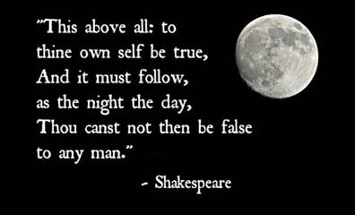
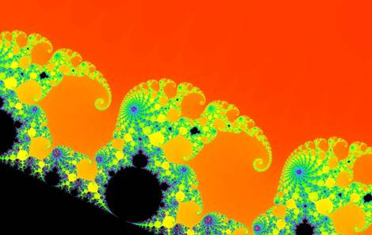

Metamystical Musings
Peering through the myst,
fathoming the mystery
© MisterY
|
1. It's the Time of the Season 3. John 5. Phylos 7. Healing 9. Viability
|
Citizen Doctor returns as MisterY
Spring arrives
To every thing there is a season, and a time to every purpose under the heaven. — Ecclesiastes 3:1
Spring, the season of Nature’s rebirth, marked by the return of the Sun, has arrived. Over a month ago, Slavics celebrated Maslenitsa, making pancakes (yellow, round and hot) in honor of the Sun, which gives us life.
It’s no coincidence that the season of Lent culminating with East-er coincides with such ancient Slavic rituals honoring the return of our Sun (which rises in the East) and with it the season of fertility as symbolized by the Easter Bunny. The Christian holiday of Easter commemorates the resurrection of Jesus, who conquered death. Here in Spain, the Easter season is celebrated with elaborate ceremonies and processions in the streets. Next weekend, there will be a procession involving two giant statues of Mary and Jesus (Maryam and Jehoshua) arriving from different directions to meet in the streets.
Procesión del Encuentro - Domingo de Pascua - 2022
Nature overcomes death every year with the arrival of Spring and a new generation of its creatures. Spiritually, we all overcome death through reincarnation. Death is an illusion; it is merely a transformation, a transition, a traversal. Death is only frightening to the ego, which fears change — even change for the better. Actually, what would be more frightening than change would be stasis, the antithesis of life.
Change is the only constant in life. — Heraclitus
This chapter marks my “reincarnation” as MisterY. In my previous incarnation, I chose the persona Citizen Doctor, after the fourth Doctor Who — as explained here.
Yes, that was the name. I was Gandalf. — Mithrandir
I began writing about Fractal Sovereignty in early 2022, trying once again to form a project team as I had attempted eleven years before and several times since. Due to a lack of interest and a change in personal circumstances, the project morphed into an album of my life in the spirit of the shaman Don Juan’s teachings. The last part of the album was a series of three articles with the title Metamystical Musings, which will be the theme of this incarnation. I was guided to complete the album by the end of 2022 and did so on Christmas Day, when I posted The Other Wise Man, a short story from 1895 that crossed my path in 1976 and set the tone for the remainder of my life. How fortunate was I, two decades later, to meet the spirit of Melchior, introduced by Merlin.
A great king he was. — Merlin
I did not know if and when I would write articles again. At the beginning of 2023, the pen name MisterY appeared in my mind upon request. It has a double meaning: on the one hand it is an intentional misspelling of mystery; on the other hand the capital-Y suggests the pronunciation Mister-Why, in homage to my last incarnation as Doctor-Who. I requested that I be alerted if there is more to write, by way of a sign.
Three months later, a few days ago, the requested sign appeared in a supermarket:
The product is an air freshener (ambientador). Its name MISTERY is a play on “aerosol mist”. Then a tagline came to me: Peering through the mist. Fathoming the mystery. I grinned when I read “neutraliza malos olores" (neutralizes bad odors). My approach to the problem of darkness in our world is for us to shine light — to illuminate, to enlighten — which has the effect of neutralizing darkness. Darkness is simply the absence of light. Did you know that the word gu-ru means dispeller of darkness? The darkness is not. It only seems to be by way of a spell. Break the spell, and the darkness is revealed as illusory. Familiar physical light has two aspects as is evident in a laser beam: information and energy. Metaphysically, these two aspects are truth and love. We illuminate and enlighten by broadcasting truth and radiating love:
Beacons by Bob Moran
Many truth-tellers have risen to the occasion, shining light on fraud, corruption and evil. They are among the true gurus of our time. But there is also also need to lay the groundwork for the era to come, which will be marked by a breakthrough in consciousness among the people of our world. The time to lay that groundwork is now.
It’s the time of the season for loving. — The Zombies
Calling all mystics
This book, Metamysical Musings, will focus mostly on spiritual development, so that the resources of the spiritual realm can better support what the ground crew is doing in the physical realm. Within the spirit realm reside our spirit families, including advanced souls who have the benefit of greater awareness and experience. They are like the generals in the rear who send intel and moral support to soldiers in the trenches. Without a good communication channel, the soldiers are left to fend for themselves and can become demoralized. Those advanced souls are sometimes called ascended masters, not because they wish to dominate, but because they have achieved mastery. They may be alternate or future variants of yourself — part of your oversoul — or they may have formed soul bonds with you through shared experience. Or, the connection may be less direct but a bond always exists by virtue of the common Source of all existence. On one level or another, they are you. A greater, more expansive you.
Fellow mystics are invited on a journey into the myst. It is in the nature of such journeys that we cannot see very far ahead. We must proceed on faith, with our heart as a guide. The heart of your being is where your spirit family resides, and where guidance comes through with knowing of rightness: right place, right time, right action. And right action tends to be a light touch. A gentle influence (perhaps as gentle as a smile) applied at the right place and time, when receptivity is greatest, when a potential or charge is ready to be released and only needs a trigger. Great external effort is rarely needed; great sensitivity, discernment and patience are more effective. But the requisite inner work to acquire these abilities does involve great effort. You must remake yourself ten times over to master them — effectively reincarnating (or being born again) during this lifetime. This is the symbolic meaning of my change in persona.
A few hours ago, I spoke with Sun Bear via a channeler for the first time in two years. He had this to say:
It is very important that you continue to improve your communication channel with the spirit realm because your world has reached a point where a critical mass of individuals in the world are ready to make a quantum leap forward which will happen over the next 30 to 40 years. So, the more that you can connect with the more expansive intelligence and translate it into the world, the better for the world.
Your contribution in being able to translate messages from a higher source is very important. We need as many mouthpieces in the world as we can get. Very tumultuous times lie ahead and it all is leading to something very, very beautiful.
Although I am a mystic and have been since childhood, during which I would have episodes of expansive awareness, as if immersed in infinity and eternity, I was not born with such psychic gifts as clairvoyance or clairaudience — or if I was, they were suppressed. But with sustained effort, such psychic abilities can be developed. Psychic ability is like athletic ability. Some people are natural born athletes but on the other end of the spectrum, there are those who must work very hard for modest gains. It is the same with musical talent, or with intellectual talent. Accomplishments in other lifetimes can carry over into the current life, as in the case of child prodigies, to give you a head start. Whatever your history and aptitude, you can advance in this life through effort and whatever progress you make will benefit not only yourself, but other variants of yourself.
Doing our part
If you have a spiritual inclination and a big heart, you can make a valuable and needed contribution. You don’t need to be a great writer or speaker, or a great musician or athlete, here in the physical realm. You are a unique, necessary and vital part of the whole, as if a thread in a grand tapestry or an instrument in a divine orchestra. And the mystic section of the orchestra helps blend heavenly chords into the symphony. Mystics play notes that are an expression of their beings, which in the most expansive sense include their spirit families and ultimately the Source of Existence itself. But the Source tends to stay in the background, relying on its agents to enact the Great Orchestration.
The Supreme is a lover of agencies. — Merlin
Opening a channel to your spirit family is accomplished through sustained inner work. Unfortunately, our society does not provide much support for doing inner work, the core of which is emotional development. Rather, it strongly supports intellectual and physical development. Think of all the educational institutions and sports leagues, the scholarships and grants for academics, the huge salaries for professional athletes. Likewise for musical development. But what about emotional development? Where are the emotional academies or the emotional Olympics? And where is dreaming taught? Instead, people are discouraged from doing inner work, until they have no choice but to do so when a crisis or breakdown occurs, and even then there is often a stigma attached. Yet emotion is much more powerful than either the mind or the body, and perhaps this is why we are steered away from healthy emotional development through inner work.
Notwithstanding our doings in the physical world, the most direct influence we can have is on the non-physical level. Have you heard of the theory of the morphogenetic field, which suggests that monkeys on one island started using a technology discovered by monkeys on another island? Information about washing sweet potatoes was apparently communicated through non-physical communication channels. Energy can also be transferred non-physically. We can offer truth and love to those lost in darkness. They may not yet be ready to receive our offering, but sooner or later they will become aware that their souls are surrounded by love and they will resonate. Until then, sovereignty is paramount; love and truth cannot be forced, only offered. We can lower ladders into the pits they are in so that when they are ready they can climb out.
Through both physical and non-physical means, we can impart a universal and timeless truth, having to do with our nature as souls incarnated into this illusory plane of existence. A truth that transcends circumstance. A truth that can liberate at any time, on any planet, in any dimension. We have something the world needs. We have a cargo to deliver. This is why we came. Are you ready to deliver?
If so, here is your homework, assigned by the Sun Bear collective:
The best way to develop really clear communication with your guides is through dreams. The dream practice is done three and no more than four times per week. You will be wakened around 3:00 in the morning. Then you will go back to sleep and there will be a dream, or, you will have a dream and be awakened at 3:00 right after the dream. It’s important that you keep a journal beside the bed and write down the main points in the dream, then go back to sleep. When you wake up in the morning, fill in the rest. The few notes you made during the night will help you pull the rest of the dream through.
Underline any symbols that stick out to you. We use the example of a red vehicle. Some people interpret a red vehicle as an emergency vehicle so they believe the message to be that they need to be careful. Others interpret that as the red sports car they’ve always wanted and so they feel that there’s a boon or windfall coming to them where they’ll be able to purchase the car. You have to write anything that sticks out to you as a symbol. You just put a line under it and in the margin write down what it means to you in a few words. And why this helps is these messages are coming to you as symbols. You say sometimes you hear words. That’s your mind translating symbols into words. Some symbols are easier for you to translate and your guides want to have a more complex language that is specifically between you and them. So this dream practice of writing in the journal, of making a little notation about what the symbol means to you, lets them adjust the symbols so there is more and more accuracy in the communication.
Another way to do this is to write down a question on a piece of paper, put it beside your bed and focus on it as you’re going to sleep. The question should be something simple, a yes or no question. They will give an answer in a dream. It may take a few nights of focusing to get an answer. These dreams are very powerful. They’re very strong. They have elements in them that cause you to pay attention during so that you won’t miss the answer. They will answer even if it takes a week or two. If they give you an answer you don’t understand, just ask for clarity. Stick with one question until you know you have the answer. And then you can do it again with another question. This process will get faster and faster until the point that if you have a question you can write it down in the middle of the day and ten minutes later you will have an answer.
So that’s how you develop your communication with your guides. As you have more and more practice with the dream work, it allows communication to seep into your waking hours. You can sit down at a specific time each day. Say you get up at six, you go about your business and sit down at eight and have that time — you can make it fifteen minutes, half an hour, an hour — you can have that time where you practice writing. You’ll start with a question and then write down whatever comes to mind. And with that regularity your guides know to show up at that time for you and they can help answer those questions. You’re going to have to wait a little while for such direct communication until you do more of the dream work, but they’re more than happy to meet you at a specified time each day for you to have questions and then write what you feel is coming through to you. This practice lets your guides know that you’re serious and it gives them material to work with so they can develop more language with you.
I can add something Sun Bear suggested to me decades ago that has proven to be most helpful: if, by the time you are awake enough to begin writing in your dream journal you have already forgotten your dreams, then begin writing about how you feel. Something about engaging in this activity often opens the veil of forgetfulness that quickly descends over our dreamlife upon waking, by design.
The illusion has a purpose. We are here to experience separation and then find our way back to Unity, guided by our inner being. But we’ve already experienced the depths of separation as a species and as a planet and it’s now the time of the season to awaken to love, to unity. As we identify with our true being and follow its lead, the veil of separation weakens until it becomes transparent, revealing our greater being in the form of our soul family. Our unique experience enhances the whole: an experience of rediscovering what is from a perspective of what is not. And thus, the Source experiences Itself.
The shaman Don Juan had this to say about walking a path with heart:
This question is one that only a very old man asks. My benefactor told me about it once when I was young, and my blood was too vigorous for me to understand it. Now I do understand it. I will tell you what it is: Does this path have a heart? All paths are the same: they lead nowhere. They are paths going through the bush, or into the bush. In my own life I could say I have traversed long, long paths, but I am not anywhere. My benefactor's question has meaning now. Does this path have a heart? If it does, the path is good; if it doesn't, it is of no use. Both paths lead nowhere; but one has a heart, the other doesn't. One makes for a joyful journey; as long as you follow it, you are one with it. The other will make you curse your life. One makes you strong; the other weakens you.
Not who we think we are
Why it matters
Whoever you think you are, is not who you actually are. Your persona will never be sovereign. Only your being is sovereign, in the spiritual sense. There is no chance humanity will free itself from its controllers — regardless of ideologies, technological/systemic innovations or leaders/heroes du jour — until a critical mass of human beings identify with their beings rather than their personas and assert their intention from their beings, a collective intention for an enlightened world, a world where goodness prevails.
Intent is not something one might use or command or move in any way — nevertheless, one could use it, command it, or move it as one desires. — Don Juan Matus
This apparent paradox resolves itself when one becomes aware of and expresses from their being rather than their persona.
In the tradition of the shaman Don Juan Matus there are two main practices taught to apprentices according to their natures: stalking and dreaming. The first article of this series introduced dreaming practice. But even if you are primarily a dreamer, it is important to understand the principles of stalking and apply them to your own being.
Most people identify with their personas, which consist of various assumed roles, behavioural patterns and personality traits. So much so that their personas have effectively become masks over their true being — hiding it even from themselves.
In my culture, a new acquaintance is likely to immediately ask you what you do for work. They want to know about your persona. Do you have a white collar or a blue collar job? What is your academic degree? From which institution? Do you have children? What is your race, ethnicity, gender, nationality and religion? Are you a millennial or a boomer? Are you liberal or conservative? Most people have ready answers to these questions about the outward aspects their personas.
But how many people have turned their attention inward in the pursuit of self-understanding? Are you a skeptic, cynic or stoic; an idealist, realist, or pragmatist? Is your main flaw stubborness, impatience, arrogance or greed? Are you aggressive or passive, dominant or submissive, passionate or reserved, action-oriented or contemplative, spontaneous or measured, discriminating or accepting, introverted or extroverted? Do you express from an intellectual, emotional or intuitive center?
To learn the answers to such questions requires more than reading a few self-help books, more than a few sessions of couch therapy. It requires many years of intensive inner work and outer practice. And, for all that effort, in the end it will only reveal what you are not. But for most of us it is necessary to make an introspective inventory on the way to rediscovering our true being.
Over many generations, the shamans of Don Juan’s lineage developed and refined a powerful practice for discovering being. Apprentices would be given the task of assuming an alternate persona, typically one very different from their original persona. They would spend months in preparation, refining every nuance of their new persona: habits, mannerisms, gestures, accents, attitudes, gait, dress. Then they would be inserted into a real-life social situation. For example, one of them spent months as a beggar dressed in rags who would sit on church steps holding a bowl to collect alms from well-dressed worshippers leaving a service, primed by their priest to give to the poor. She became so immersed in her alternate persona, so accepting of her social status, so at peace with the simplicity of her life, that she all but forgot about her former life. Had it even been real, or was it just a dream — or perhaps another lifetime?
The apprentice would usually have difficulty restoring her original persona, not unlike the difficulty of deprogramming someone extracted from a cult. Only to repeat the process, each time creating a persona substantially different from all previous ones. The next time, her role might require her to be aggressive rather than passive, domineering rather than meek, annoying rather than pathetic. And then repeat the process, however many times necessary, until something extraordinary happens.
Until, when restoring her original persona, she is profoundly shocked to realize that that persona is also artificial, its outward features having been strongly influenced by her parents, family and culture. Its inward features, it turns out, are mostly chosen by her soul upon incarnation as themes for a given lifetime, but which are possible to alter by intent, especially by older souls.
Where does such a jolt to one’s awareness leave one? With the realization that one’s persona is like a garment worn by one’s being. A garment that is typically worn for a lifetime but need not be. Our formless being is that which wears personas to give it form as a means to experience. With such awareness one tends to take oneself less seriously, resulting in a more joyful experience.
This jolt can even have the effect of stopping the world, breaking the mirror of self-reflection, disarming the ego, quieting the mind and inducing inner silence, the gateway to higher consciousness. Identification with one’s being unlocks power. One is no longer a victim of circumstance but a master of one’s own destiny.
When your mask interacts with other masks, drama ensues. Subconsciously, you are aware that your mask is a pretender, an impersonator. Reality responds to energy and if your persona is not reflective of your being, not authentic, the underlying insecure and conflicted energy will tend to manifest painful experiences. If you do not make the connection you will feel like a victim. But you never were a victim, never were powerless. You only decided to play the role of a powerless victim and became so absorbed in it that you forgot who you really are.
Power is something a warrior deals with. At first it's an incredible, far-fetched affair; it is hard to even think about it. Then power becomes a serious matter; one may not have it, or one may not even fully realize that it exists, yet one knows that something is there, something which was not noticeable before. Next power is manifested as something uncontrollable that comes to oneself. It is not possible for me to say how it comes or what it really is. It is nothing and yet it makes marvels appear before your very eyes. And finally power is something in oneself, something that controls one's acts and yet obeys one's command. — Don Juan Matus
Wouldn’t such power be dangerous in the wrong hands? Indeed. But by the time one identifies with their being they are no longer interested in persona-driven dramas, in ego-driven manipulations. It is a built-in safety valve. Recall that you have to remake yourself ten times over to attain such power. By then, you will no longer be interested in petty power games.
Who we really are
With such power, one realizes that their essential function as a being is that of a perceiver. As a facet of the One Being, we look outward on Creation from our unique perspective, so as to provide experience on behalf of the One. It is tempting to equate perception with creation, as some scriptures do, and in a sense this is effectively true — you do indeed create your own reality and together we co-create a shared reality. But all possibilities already exist in potential form. Our function as perceivers is to select from Infinity the part of Creation we wish to experience on behalf of the One Creator. And so we are endowed with free will and the power to manifest.
The experience of this particular plane, where perception is veiled and where linear time and cause and effect are taken for granted, is one where we have foregone our divine inheritance, the power to manifest, and replaced it with manipulation as a means of control.
We are not entirely sure why our Logos and several neighboring Logoi of approximately the same space/time of flowering chose the bipedal, erect form of the second-density apes to invest. It has been our supposition, which we share with you as long as you are aware that this is mere opinion, that our Logos was interested in, shall we say, further intensifying the veiling process by offering to the third-density form the near complete probability for the development of speech taking complete precedence over concept communication or telepathy. We also have the supposition that the so-called opposable thumb was looked upon as an excellent means of intensifying the veiling process so that rather than rediscovering the powers of the mind the third-density entity would, by the form of its physical manifestation, be drawn to the making, holding, and using of physical tools. — Ra
…and be drawn into ego-driven manipulations and persona-driven dramas — a full-fledged experience of the illusion of separation. What could be a greater contrast to the One, so as to most clearly perceive what is from the perspective of what is not, once we reclaim our divine heritage? And in so doing we enrich All That Is.

Spiritual Homework
Most of us will not have the opportunity to rediscover our being using the stalking technique of ancient shamans described above — unless, perhaps, we become method actors and apply The Method as a spiritual practice. But there are countless spiritual practices and traditions to choose from; there is a path to suit any predilection.
In my first article, I described a dreaming practice for establishing communication with your spirit family, as a means to enlarge your identity, your sense of being. I have been practicing channeling higher consciousness for 27 years, beginning with a channeling class I took from a channeler named David in 1996. One of the classes was extraordinary in that it put channeling practice in the context of spiritual development, the purpose of our experience on this plane, and the rediscovery of and identification with our true being. It is actually not about channeling per se, but connecting with your being automatically makes you a channeler.
Spiritual Homework (25:48 mp3)
The audio quality
is not the best, as it was originally recorded on a cassette recorder then
later converted to digital form. The sound you can hear in the background is
David scribbling on a pad of paper, as he always did when channeling. He needed
something rhythmic for his body to do while is mind was in an altered state.
When the monologue veers into the topic of relationships, he mentioned that he
was responding to relationship questions in the minds of the small audience. He
might have detected my own emotional turmoil, having just ended a relationship.
His advice on that subject was most helpful, and I have treasured the recording
ever since.
The beloved
I’m staring at the title of this article and noticing, as if for the first time, how unusual the spelling of my given name is. Why is there a silent h? Well, it seems to have originated from the h in Yahweh: יְהוֹחָנָן (Yəhôḥānān), meaning Yahweh has been gracious, as I’ve just learned — I had never thought to look that up before. I’ve always liked my name and was always glad that my namesake was Saint John the Beloved of Jesus, my favorite biblical writer. If anyone was a mystic, he was. I have written before about the revelation that this same John is my master teacher and that we have a soul connection.
I recently manged to retrieve some old recordings of John’s voice as it sounded when he embodied a trance medium, that I thought might have been lost. I had not listened to them for about twenty years. The first one that I listened to again in the present was recorded in 2002. John talks about shedding personas, a subject I discussed in my last article. I take this synchronicity as a sign to post his monologue:
Jehoshua almost always accompanied his beloved John but remained in the background except once, when he spoke for himself. I might have transcribed the above recording but I have found that the vibration of spirit’s voices helps me to connect with their beings, and that is more important to me than their instruction. Perhaps you, too, may feel a resonance with them in this way. Perhaps you, too, may come to identify as children of Yahweh, as Elohim.
John usually spoke in abstract terms and then would invite me to ask questions, as he did at the end of the above monologue. If my questions were of a practical nature, as was usually the case in those days, he would hand off to Sun Bear and Chief Great White Eagle, saying that they could better answer my questions. John, as a mystic and visionary, is not as practically oriented as the Indians who, in comparison, are eminently practical. Sun Bear in particular is well-able to relate to life in our times, having incarnated during the last century, transitioning to spirit in 1992, only two years before I first spoke with him. And besides, Sun Bear seems to have an extraordinary capacity to penetrate our refracted dimension and sustain a strong presence in a way that few other spirits are able. As such he is very busy, working with many spiritual aspirants in our world. Chief Great White Eagle works most closely with me in day-to-day life.
But John is my designated master teacher, which I believe means that he has greatest authority to intervene in my life when needed and called upon. There was one situation a couple years after the above recording was made when John got me out of a predicament that I had gotten myself into, as later explained by the Indians. While in the predicament, I was only aware that powerful, miraculous assistance was brought to bear. At the time, I felt I had been blessed and thanked God but did not understand, until the Indians explained so, that God was acting through John in this instance. As Merlin has explained, this is how God prefers to operate, through His agents. Thanks to the Indians, I am now more aware of John’s presence in my life, and of his immense capacity for love — I can understand why Jehoshua loves him so. Here is a recording of John, made in 1997, explaining the spiritual path and the unconditional nature of the love that spirits have for their charges, on behalf of the Source:
After a year living in Spain, having been guided here by John, who once lived across the Mediterranean Sea from this land of palm trees, at last I can understand the lyrics of a song I have loved for 50 years. From us to you:
Playing for Change — Guantanamera
Finding Unity in Infinity and Eternity
To see
a World in a Grain of Sand
And a Heaven in a Wild Flower,
Hold Infinity in the palm of your hand
And Eternity in an hour. — William Blake
Distance and time are measures of separation and as such are illusory. To break the spell of separation, do as the poet directs: hold Infinity in the palm of your hand and Eternity in an hour. I wonder if Blake's conspicuous capitalization implies a recognition of divinity (or at least awareness) in all that seems to be other — an indication of awakening consciousness.
A road to such awakening is to consciously look for symbols and patterns throughout your environment and experience, that demonstrate the connectedness of all things across distance and time.
Symbols and patterns
If you have begun keeping a dream journal you may be noticing by now the symbolic nature of your dream environment. Every element of your dreams is symbolic. This may not be obvious at first because the dream environment is very fluid, constantly morphing (unless your intent is strong enough to stabilize it). The key is to perceive the essence of the symbols, the signature vibration behind the myriad of forms. By keeping a dream journal, not only will you better remember your dreams, but you will eventually understand the meaning of dream symbols. They are messages to your surface consciousness from the deeper layers of your psyche.
Likewise with patterns: repeating dramas with the same theme, despite varying contexts. Your dream journal will reveal that the same drama repeats until it gets your attention. Sadly, perhaps, most people do not notice that the dream they are having is qualitatively like many other dreams before it and so its meaning escapes them. Then the dream is forgotten as if it never happened. Night after night, your psyche tries to get your attention, trying many different scenarios and props, only to be ignored. And so you remain under a spell.
Exactly the same principles apply to waking life. There is no difference except that the waking construct seems more solid. Everything is symbolic. There are no coincidences. There are no ordinary moments. Patterns repeat until you snap out of your trance.
If you do not have a predilection for dreaming, you can stalk yourself. A simple and effective way to do so is to conduct a daily review before sleep. Review every event of your day that had emotional impact. Notice how you reacted to circumstances. What was your stance toward the people you interacted with? Were you in a defensive mode? Were you in a manipulative mode? Did you have pre-conceptions about them? Did you pre-judge them? Did you classify and categorize them according to what use they might be to you, or what danger they might pose to you? All such calculations usually happen automatically — by habit — beneath full conscious awareness. The task is to examine them thoroughly and then decide if they serve you. Are they reflective of who you are, who you choose to be?
Sun Bear once said to me that if I kept doing a daily review and occasional life reviews, then when I died and did the “big review,” I would cheer myself on, saying: Yes, there I followed my spirit! And there, again! People who go through life on cruise control will have a different reaction: Oh, no! I did that…. for THAT!? Often, they will want to reincarnate immediately, without processing more deeply, saying: Just let me go back! I’ll get it right this time! But much the same is likely to happen again. There is no shortcut. It is all about being, not doing. Doing merely reflects back to you your being. At some point, you must simply be with yourself and feel whatever there is to be felt. Eventually, you will discover that just being with yourself is delightful. What causes you to avoid feeling your being is that at first, some pain must be felt to get to the joy on the other side. This necessity can be postponed but not avoided forever. So why not get on with it, sooner rather than later?
I strongly recommend watching the movie Groundhog Day as a study in awakening. It is not as much of a fantasy as it might seem. The same can be said of The Matrix movie.
Infinity and Unity
Since childhood π has fascinated me. It has been a source of endless wonder. Did you know that every book ever written, every song ever sung, every painting ever painted, or will be, is encoded somewhere in π? But the Mandelbrot fractal, when I learned of it in the 1980’s, took me beyond wonder into mystery. It is symbolic of everything! Infinity as Unity. π is also this, but the Mandelbrot fractal represents truth more visually, more beautifully. As Merlin said: Mathematics is the closest we come to understanding the Mind of God.
The mathematics of the Mandelbrot fractal are deceptively simple. The recipe for the constructing the fractal is based on the quadratic iteration
The variable z is complex, meaning that it has a real and imaginary part, often represented visually as the two axes in a 2-dimensional complex plane. c is also complex but is considered to be a constant. The recipe is this:
- Choose a point in the complex plane, c.
- Set z equal to zero, square it, then add c to produce a new value of z.
- Repeat the process until it is clear whether the absolute value of z increases toward infinity or does not.
The Mandelbrot fractal is the boundary between points in the complex plane that iterate toward infinity and those that do not; it has a fractal dimension greater than one. A circular disk in a plane, for example, is bounded by a smooth circular line of dimension one. The boundary of the Mandelbrot cardioid is not a smooth line. It is more like a coastline. The closer you zoom in on it, the more bays and coves you notice. The length of the coastline grows as your measurement resolution increases. There are techniques to colorize the boundary according to how rapidly nearby points converge or diverge when iterated, resulting in fascinating and beautiful images like this one:
The Mandelbrot fractal
The Mandelbrot fractal is a universe in itself. You could spend many lifetimes exploring its bays and coves, never seeing exactly the same shoreline features twice. On one excursion you might find Seahorse Valley:
Seahorse Valley
On another excursion you may encounter Elephant Valley:

Elephant Valley
An infinity of undiscovered marvels awaits those with the urge to explore. We all have such an urge. It’s in our nature as creatures to seek what is around the next corner or over the next hill. We have an inherent fascination with Creation. Our attention is literally fastened to — captivated by — our environment via our senses, to the point where we can lose awareness of our being, the perceiver. That is, until we start to recognize repeating patterns. I’ve never seen an elephant in this world before, but there is something familiar about it. Haven’t I seen that cardioid shape before? And there it is again! Is it some kind of clue? A breadcrumb?
At some point, we start to wonder what is going on behind the scenes. We break our fixation, stopping the world in its tracks, and ask ourselves: What is the source of this infinity? And indeed, there is a singular source, none other than the simple generating expression given above. We have just realized the nature of Infinite Creation: it already exists in potential form, implied by the One expression, but to experience any part of it requires that we select it out of Infinity by resonating our frequency with it, then actualizing it by focusing our attention on it. In the Madelbrot metaphor, if we want to visit new territories, we have to construct them using the recipe. In that sense only we create what we perceive.
Only Infinity can faithfully represent the One. Finite multiplicity would fall short, be incomplete. The One is complete. We can never hope to finish our exploration of Infinity — and that can be seen at exciting or depressing — but we can become aware of the One behind our perception and thus embrace the totality all at once.
With this new awareness, the quality of the explorer’s journey becomes entirely different. One is no longer in a hurry to get anywhere. Whatever part of the fractal one finds oneself in, is a representation of the One —for those with eyes to see — to be savored and appreciated. Judgements of good and evil are left behind. For it is recognized that condemning any part of Infinity is to condemn all parts, including ourselves, because Infinity must contain All to reflect Unity. Without darkness, there is no contrast to light and therefore no experience to be had. You might as well judge π, because it contains the darkest images imaginable, if its numerical sequences are interpreted as pixels.
Some people are distraught as they witness technocratic tyranny overtaking our planet. Fear not.
But you and I, we’ve been through that, and this is not our fate. — All Along the Watchtower
Know that somewhere in Infinity there is a tyranny far worse than any we could imagine, and yet it has already been defeated. Our divine nature is powerful enough to traverse out of any undesirable timeline in any manner we choose. Wrestling with oppressors only fastens us to them. Be like Neo in The Matrix when he dismissed the AI's and their bullets with the sovereign assertion No and a wave of his hand. Wrestle with your own demons instead. Stake out your inner territory and claim your divine inheritance. Then assert your sovereignty as a Child of Creation, free to surf the timelines as you desire.
Listen to Enoch, Jehoshua and Toth reveal the truth about how we actually move through our experiences:
Two personal symbols
I was born in a hospital named in honor of Saint Elizabeth, the mother of John the Baptist and aunt to Mary (Miryam), mother of Jesus (Jehoshua). There are no coincidences. I was destined to meet Miryam decades later when she embodied a trance medium in Cape Elizabeth, Maine. She visited me on behalf of one she loves, whose middle name is Elizabeth, which means God is my Oath in the original Hebrew אלישבע, the human language closest to that of the Elohim, as I understand such matters. I accepted her request as my oath, which I shall honor while I live.
My earliest years were lived close to the Mystic River. One of my first memories is flying a kite along its banks. I did not know it at the time, but less than two miles upstream, on Mystic Lake, lived Claude Shannon, an MIT professor who is known as the father of information theory. All modern digital communication can be traced to him. Perhaps he drove past me on his way to work while I was flying my kite. There are no coincidences. Decades later, I would extend Shannon’s theory, connecting it to a metaphysical principle: dynamic balance of opposites, as in the yin-yang symbol, with computation theory and chaos theory (which relates to fractals) playing supporting roles.
Yin-yang: a dynamic balance of opposites
This doing served as a bridge for me from physics to metaphysics to mystery. It precipitated a mystical experience of connecting with all other metaphysicians who have found the same truth in other times and places throughout the cosmos and have recognized it as a fundamental design feature of Creation.
Walking the line between the light and the dark shall ever be the journey. — Jehoshua
Balance is the cardinal rule of magic. — Right Use of Will
Symbology can indeed be this literal. Your whole life is planned in advance by you and your spirit guides, according to desired experience or needed lessons, with contingency plans to allow for free will choices, some of which might trigger interventions. Various clues and breadcrumbs are woven into your alternate probable timelines so that if you make the effort to look for symbols and patterns you will find them and perceive divine artistry and orchestration. Then life will not be so serious; important, but not serious. An experience to be enjoyed and appreciated here and now.
I no longer have much urge to discover what is around the next corner in the infinite fractal that is our reality. Here and now in the company of my greater self is as rich an experience as can be had anywhere, anywhen. I am letting go of my fascination with creation to join Miryam and Astarte, John and Jehoshua, Ambrosius, Enoch and Phylos, Toth and Melchior, Sun Bear and Chief Great White Eagle, and many other mystics and shamans, in their quest to perceive the face of the Creator and to embrace Oneness.
Breathe deeply and
enjoy this eternal now. Your spirit family has your back. And the Supreme
stands behind all. Are you ready to take the road less travelled?
Keeper of the Akashic Record
The first time I had a session with my trance medium was in 1995. I had no idea what to expect. After chanting AUM seven times, Phylos appeared, accompanied by Jehoshua and John. I would only learn later who the latter two are. Here is the transcript:
Greetings to you, friend. My name is called Phylos. Our name is Phylos. I do not come here alone. For in attendance with me is another who is a guide for you whose name is Jehoshua and another whose name is John. We blend our essences that we may commune with you. I, Phylos, am called Keeper of the Akashic Record. And that which is called Phylos is in fact an entity that may be called a collective consciousness: a group of many particles of consciousness which bands together to call itself Phylos. And joined are the other two who are in fact guides for you, even as I am not, although you are known to me.
We come here that we may speak with you on many matters. That which is called the Akashic record, which I keep, which we keep, is a record in light of all which was and is and shall be, all that exists as parallel to this that has been and was and all that is and shall be, and all that exists as potential which relates to this Universe. For everything in this Universe — and this Universe is a finite construct — exists now either as potential or in some form. And for those who are able to access and understand that form, they are given entrance, it might be said, into Akasha. You, also, have an insight into the Akashic Record, as it were. That part of you which is able to access the Akashic Record is called consciousness. And in accordance with the, shall we call it, level of awakening within your consciousness, you are able to perceive into the Record and thereby glean understanding and insight as it relates to your journey — your journey through life and your growth in consciousness. Guiding that growth in consciousness is spiritual force, some of which is named Jehoshua and John.
You have been many times a cleric, monastic; many times living an ascetic existence prior to this incarnation and as a result there is a tendency which is strong in you to be alone, even in the company of others. As a result you, yourself, have developed a kind of mystical awareness — that is, to say, a desire to become more insightful and clearer about the unseen realities — and have some challenge and difficulty relating that interest to normal everyday existence. Indeed, however, you must understand some simple few things: that you are not here about the business of the normal and the everyday. For you have done much of that even more than a thousand years ago. Indeed, for thousands of years prior to that time of a thousand years ago you did carry out the affairs which might be said to be of a mainstream style of activity: life in the ordinary world, family and so forth; and that was a part of your spiritual path. But having gleaned much understanding from those incarnations — not only here on this earth but elsewhere as well — you came into the presence of many physical plane teachers and masters who stimulated an interest in moving forward further as a soul. And, as a result, subsequently sought a spiritual direction which, in a sense, separated you from the life of the mainstream whereby you took up many forms of learning and expression from science, to the arts and music and also into the realms of the mystical, about which you did write much even as far as two thousand years ago.
In this incarnation, however, there is much to be done. For you are seeking, what might be said, a completion of your affairs here in this dimension. This completion is not as easy as perhaps one might think, even for one of your soul's age and experience. Even though your soul is old and wise, and the path ahead is relatively simple, it is not easy. It is, in fact, a challenging one. You have attained and created many relationships and involvements — not only in this life but in many others — which, in some instances, you have facilitated and helped others — even as they have helped you — and, in some instances, created unfinished matters that need to be finished and even other matters which have created karmas, as it were, for which you must account or, shall we say, matters which must be cleared — ends which must be tied up — so that you are free to move on. Since you are in what might be termed a "final expression" here in this plane (which does not mean necessarily that this is your final incarnation, but certainly one of the final incarnations here in this world), then you have an extraordinary opportunity.
But you cannot view that opportunity with what we might term third-dimensional awareness or, that is, the veil that exists between the physical and spiritual planes must entirely disappear. And you must seek to more deeply embrace conscious contact with the Source of Existence and allow yourself, through the refinement of that contact, to be guided on a daily basis by that which will reveal itself to you within your own awareness, and allow yourself to be greatly influenced by the Supreme at work in this existence. It means letting go of other agendas, which shall be revealed to you that you might instead be about the business of your completion and travel the road of your happy destiny. And with all of the obstacles that may stand in the way, coming to set those affairs into completion and closure so that you are free to move forward as your soul is meant to. It is toward that end which we come here to address the specific matters of concerns as relate to that forward movement. And, so, if you would have us do so, we will address those matters of concern in your life whether they be of seeming material import or questions of spiritual and philosophical nature. We come here that we may facilitate that movement, if you would have us. So, at this time, if you wish, we will address your questions if you will care to address them to us.
I'm very happy to meet you Phylos and Jehoshua and John. Yes. This is a very meaningful experience for me. Yes. And I appreciate everything that you said. You are welcome, friend. I do have some questions, but what you've said already answers many things. And I think I already knew those things (Yes) in my heart but my mind confuses me. Yes. My main question is: I have said in my heart that I want to serve the Spirit, that that's my number one goal in my life, but in the year or so since, I've realized that part of me really isn't willing and is holding back. And perhaps I'm not yet even worthy in some ways to serve the Spirit. And yet there's no doubt in my mind that that's the only goal worth following. So, I'm wondering what concrete step is my next step toward becoming worthy and willing to serve the Spirit. It's especially relevant now because my life situation has changed very much and I have a great opportunity to make choices now that could affect the rest of my life. There are so many things that I could do and I need guidance on what would be best for me.
The pain you are experiencing as a result of being at such a turning point is indeed an important part of the next step.
First, we must say there are many dimensions to the journey which lies ahead; no single step is necessary but many shall become clear and a little shall be revealed each day — never more than what you are able to embark upon.
It is important, also, that you understand (or that at least you know) that we already find you willing and worthy. Perhaps what you mean by not knowing if you feel worthy and willing is that you may not feel capable or you may not feel the ability or the power to take the steps which sometimes you feel are necessary — and that indeed is a characteristic that shall never disappear. For the power needed to go forward shall never be contained within the current construct of your psyche. But you will have to reach beyond the construct of your psyche. That is, power — spiritual power — or the power which comes from your spirit nature, comes from a series of experiences and identifications with experience and knowledge from which is attached a certain amount of strength, and which is given to you through your psyche by your identification with those ideals, principles and experiences. When it comes to the journey, that is an infinite one, many before you, including ourselves, have had to do exactly what we shall now tell you.
We have had to develop and refine a conscious contact with the Source of Existence which was the solution to our problem. Then, after developing and refining that contact, seeking t's guidance for us including a continual and frequent prayer. Not only for guidance, which is important, but for the power to take the necessary steps — the necessary steps as they are revealed — using the spirituality which we have found in our hearts to take the necessary steps as revealed, actually made it far simpler than anything we could have otherwise imagined. And through those workings we were gradually able, not only to have an increasing spiritual awakening, a spiritual experience from which we derived the ability to see and move forward.
This has already begun for you. Yet, you cause yourself some unnecessary grief — even though some fears and doubts shall arise which are inevitable and unavoidable — you cause yourself unnecessary grief — by trying to get an understanding of the whole picture when that shall rarely occur. But instead, only ask for what shall be the next step. Sometimes what is expected as the next step may still be, unwittingly, a desire for too many steps — unnecessary requirements — which seem required in your mind, may cause you not to be available to understanding just what the next step is. And so, the next step can often be approached on a daily basis in the following manner.
First, daily, before taking one foot out of the bed, simply lay there before rising for a few moments and allow your body to physically relax and your spirit to remain gentle. In the gentleness, which is simply a relaxed breath and a relaxed body, that is the presence of spirit. In that presence of spirit, ask of the Creator to receive all of you, as you are now, saying:
I am now willing for that: for you to receive all of me, as I am, whether I think it is good or bad. And, having received all of me, give me the power to take the necessary steps to serve the Spirit and to understand Your message to me. Guide me and give me the strength to go forward from here to express as Your agent in the world.
Then, resonate in that vibration for a moment or two.
Then, upon rising, as you go throughout your day, sometimes you will find you will need to frequently ask direction. For you will feel sometimes automatically knowing of what is right for you. But sometimes you will come across experiences which leave you baffled, confused, or sometimes hurting and doubtful that you are on the right road. When that occurs, that is the time to seek further direction. Otherwise, you are simply on your journey having asked earlier. But when you reach these points of confusion, that is the time for the next step. So, don't struggle looking for an answer at that time. Simply stop a moment and ask for an intuitive thought or a sign. Do not struggle seeking that sign or intuitive thought. It will come. Instead, simply ask for the thought or the sign and turn your thoughts to the helping of another and go about that business.
Then, as a working part of your mind it shall come automatically. Sometimes you will be aware of it. Indeed, most times you will be aware of it, at some point soon. But other times you will not be aware of it. That will be less frequent. So again, when met with obstacles which frustrate you, challenge you, or which you can find by ordinary means an answer, do not struggle with what is right. Simply ask for an intuitive thought or a sign. Turn your thoughts to the helping of another and go forward.
Now, the reason why this must be done: For even though you are a deeply spiritual soul which is already intertwined with the highest and therefore guided by the highest, even ones such as you can become, without realizing it, enormously self-centered. Self-centered even for the most noble of ends. That is, always wondering: What shall I do. What is right for me. How can I get the most for this. What is best for me. And so forth. And this, with yourself at the center of existence, is a kind of bondage which can become tiresome, if not obsessional.
And that keeps one from opening up to that which is beyond the concerns around one's own psyche. And in order to do this, this must be worked out on an altruistic plane — which is a spiritual plane — that is, coming outside of self in service to the Source or others, and this turning to the thought of helping another and asking for the guidance will cause the psyche to open and at a time when you are not self-concerned it will flow into you. And this is why you must not struggle seeking the answer. But instead allow it to be worked out on an altruistic plane by putting yourself in the motion of helping another by turning your intention to that direction. And, increasingly you shall not only find yourself free and joyous and happy but you shall see how many ties and bonds you have to a self-centered focus; and in that way take steps to be free of that as you are revealed how to do that. Many times each day, all throughout each day; each day, giving up the little bonds that tie you to that you do not wish to be tied to; suddenly finding yourself free, increasingly, day by day. And power that was otherwise wasted in ways you could not have imagined you were wasting it will then flow into you in the direction that the Spirit, which has intertwined with your nature, is inspiring you.
And, rather than not having the energy or the vision to be able to proceed forward you shall instead be sucked up into the winds and flows of your higher nature and gradually be cut off — and in some instances not so gradually; in many instances, quite abruptly — cut off, from that which you are tied, which keeps you from being free and one with your purpose. And pushed by the winds of the Spirit into unexpected directions which bring about your fulfillment in ways decidedly different than you would have planned and completely in harmony with who you really are.
For if you could have understood or if you could really understand just what it is you are here to be doing, exactly, by your own intellectual seeking, you would have found this by now. And, if you were capable of clearly understanding it, we could explain it to you. But since it exists outside of the context of your psyche to grasp, we cannot fully explain it to you.
[Tape break.]
...which will and do occur on a daily basis in your life. And from that awakening you will gradually come to see or perhaps suddenly come to see in many stages.
Now, we are able to tell you some things about the nature of the shiftings we speak of, but more will be revealed to you directly on a day-to-day basis as a result of your conscious contacts with the Source of Existence Itself.
For example, you have for some time understood that you need to leave the place where you now live. Yet, the circumstances and the conditions surrounding that may seem too binding and complex. But you rightly have received that intuition. But the route by which that can take place cannot fully be revealed so long — rather, it is attempted at this point to be revealed —but so long as you have certain conditions and created certain causes which inspire those conditions, you have a number of requirements which you imagine you need must be resolved before that is possible and those requirements stand in the way of your seeing what actually needs to be done.
So, on a daily basis — if you are seeking in the manner we described — systematically you will be guided to such circumstances as you will see differently. You will not hold the same requirements and in some instances be freed from them and shown other opportunities. And you will see that those requirements were only based upon fears of what you need to survive, when in fact those fears shall be replaced by a dependency on the Supreme rather than on the world.
This dependency can only be manifested by your being further connected to the power which now seeks to enter into your being. And rather than being dependent upon the circumstances which you imagine are needed to survive, you will be dependent upon the Supreme employer, which is the position that is the right position for you. This is possible, yet the fears and doubts related to it must be systematically chopped away. "Surrender" simply means the mere willingness to put yourself in the position to recognize further what those fears are and allowing them to be replaced by the experience of being in contact with a power greater than those fears. And that is how the closure takes place.
So again, in the morning, let there be this meditation. In the afternoon, or in the day, let you seek guidance that it may come through your consciousness when you seek it. And thereby your contact will grow in its refinement. And in the evening a final meditation just prior to sleep, for but a few moments, in a laying position, if you desire. And after you become gentle in spirit, physically relaxed and calmed breath, the gentleness that is spirit shall come upon you. And in that, simply review your day. Briefly, looking at where you may have done better in certain ways that are important to you. And where you see that, ask the Spirit to guide your future actions in that regard. And, in this way, you will you make a kind of daily accounting which will save you from creating great wreckage for which you must later account, or in some way put in order, which will tie you up and slow you down.
Indeed, some of what is keeping you physically where you are when the urge to move is upon you is because you are managing matters which you have created which now have tied you down, some of which you must be free of. Some of this we can take care of for you, but others you must be willing to set in order — set your affairs in order — according to the guidance you receive, the best you are able to understand that guidance.
Your willingness to account for what you have created plus your willingness to keep turning to your inner connection to help you complete it, is exactly what your spiritual path is. The miraculous shall occur from day to day. And increasingly you will feel less bound to the obligations and commitments which you feel you must honor, even though those obligations and commitments may not have come from your highest place, but your current sense of what is so.
You are currently being guided to a clearer, higher sense of what is so, that may be called fourth-dimensional awareness. A path you have been on for a long time, but now one you are ready for a magnificent breakthrough where you shall experience yourself rocketing into a fourth dimension of existence whereby you shall find yourself empowered in another way than you have already. And this has begun, and what has in fact begun to free you from the past, so that you are free to move forward.
There, I know, are many questions and I have been wordy. I will seek to be brief but this was essential for us to share with you.
Thank you. Yes,
you answered a lot of my questions automatically. Yes. My other
ones... One that you've already answered in effect but has preoccupied my mind
— and maybe you could ease my mind a bit — is on the question of a relationship
with a woman and whether I should put any energy into creating that reality. I
have a dilemma between knowing that I create my own reality (yes) and
knowing that… Well, I think you know what I mean. Do you have any advice for me
about... Yes, we very much do. It is a question of what my intent should
be. Yes, let us bring another who is more able to address those concerns.
Blessings are with you, beloved friend. Thank you. Goodbye for now. Goodbye.
The one and only
Continued from Phylos.
Greetings to you, my friend. My name is Merlin. Well actually that isn't really my real name; my name Ambrosius; Merlin is what I am called though. And Merlin was actually a shortened version of the word Merlinius which is how it was said in my language — Celtic — or Myyrddin depending on where one was from, and that is a title more than a name. I was called Myyrddin Ambrosia or Merlinius Ambrosius, either one. But you may call me Merlin; put aside all that confusion. I am also an old friend to you although we haven't always been friends. We have been rivals at one time. However, we have subsequently, let us say, put our affairs in order on many occasions. And not only here in the physical world, when you were here before and I was here before, but many times in our dimension we've become quite close, as a matter of fact, and we… you have often helped me on matters even after you have left this world and come to the other aside and dwelt in the spirit. And so for that reason we have made a little pact that when either one of us happened to come into this world for any incarnation, for one reason or another, that we would give each other a hand. So, I've returned to do just that. Thank you, Merlin. I'm very glad to meet you again. Well, I'm very happy to be able to speak with you in this way.
Let me say one thing: First of all, regarding creating our own realities. Do you know for centuries you and I have been in a debate around this and not always on the same side of the debate — switching sides alternately? But, in essence, let me simply say this: That whoever decides to create their own reality had better make certain that it's in harmony with the reality beyond their own creation. Because there is always the reality you create and the reality other than the one you create, which usually tends to rule over the reality you've created. And, you see... Let me put it like this: You can be master of the reality of your creation but you cannot be the master of the Creation, as many may find out over and over again, because a particularly difficult thing happens. Without their intending it, one of two things happens: one is good and the other isn't.
The bad thing is this: without particularly intending it, one becomes a controller and a manipulator. Now the word human actually means... Do you know what the word human comes from the word… the Latin root hu or divine and manus which means manipulator? So, the actual word human means divine manipulator. Are you aware of that? No. Yes, well, the thing about... You are meant to move and manipulate a few things in life. However, the thing that you are not meant to manipulate is the will of others. And it's very hard to try to create a reality that does not come into conflict with what others intend to create. So that, before you know it, you are in a battle of wills with others that don't agree with you. And I don't mean that you need their agreement, but… For example, a relationship.
Let us take a relationship as an example: You have a particular idea of what you might want in a relationship which might be different than even your partner's idea in some respects and you find yourself in a battle with them. And it's not only with a relationship but with every aspect of life until people end up creating karmas with each other, or causes and effects which end up entangling them and they forget all about what they are trying to create at the highest level. Because they've created so many causes and effects, they're so busy straightening those things out they become involved in a whirlwind of effects that tie them up. And this is what many find.
The other thing that tends to happen when people tend to try to create their reality — and this is a good thing — is that, as a result of having so many conflictual experiences, that they realize that the Universe has its own flow which is probably wiser that any one they could think of. And they end up seeking their place in that flow. And as a result of seeking their place in it they find a higher reality.
Now, this a nigh unto impossible to find while people still hold fear. And this is what you and I — as well as many others — have found as the final resolution to this great argument which we had been carrying on for centuries. And that is, the creation of one's own reality rarely happens on a higher level, at the highest of possible realities. (It happens on a smaller level.) But the reason why we have found that that rarely is realized — or shall we say, the creation, the intention to create a higher reality from one's own will — we have found rarely happens because... What we have found instead most often happens is that people end up trying to create a reality based on what they fear won't happen if they don't try to create it. In other words, fear turned out to be the ruler.
Even though many, including ourselves, have found that we were trying to get beyond the fear, and base it on love, we found that fear ended up ruling. In other words: because we, for example, thought we could never really have a relationship we tried to create one based on the idea that unless we do it we won't have one. And that as the motivation ended up thwarting it. And the fear ruled out again and again. You and I have both found this — and this is why you're caught in it right now, in a debate about it in your yourself, because it's hard for you to remember what we've realized. And instead, what we have found is that when we released ourselves from the fear that there wouldn't be one or that we didn't deserve one or couldn't have one; rather than trying to make ourselves feel worthy and create a psychological whole perspective, we just found that: why don't we let the Spirit address our fear as an energetic principle or as an energetic experience. Acknowledgement that we were… had concern or doubt that the Universe could take care of us and to let the Universe reveal to us how safe and how wonderful we are and how wonderful life is. And also let it remove from us...
So, a little thing I want to ask, to suggest to you, that Merlin… that rather, not Merlin, that... I forgot. Ah, two, that the others were joined in with Phylos, Phylos? Yes, but it was also Jehoshua and John. Jehoshua? Yes, the thing they forgot to mention is that in your morning, when you're asking to be received and guided, also say: Remove from me all the obstacles that stand in my way of what I am here for. Every day ask for the removal of those obstacles. And, letting the Spirit address that is wonderful.
So, with regard to a relationship: How do you create your relationship? Listen... it is very simple. You... I did it like this: I simply said... Well, first of all, I must tell you, I wasn't all that good at relationships and perhaps you shouldn't listen to me, heh, heh. But this is how I did it: I said, Creator, You know what I want. I'm a man. You know what I want! And, You know what I want better than I do, so please, bring it to me! And Creator did. In fact, in one instance, the very next day someone came to my door and just said: Merlin, I'm supposed to be with you. So I said, Well alright, since I had just asked. [Laughter.] Now you might think this sounds very strange, but it happens. It wasn't very strange at all; it happened on a regular basis.
And after we had a relationship for a while I started to get rather annoyed. I was not a patient man, and I didn't know what to do. It occured to me: Well, Creator; well, thank You for having brought me this gift but will You please take it away now. [Laughter.] And within a few weeks she came to me saying: You know, I sense it's time for me to go. Now, I could have just said: Ah, I can't stand this rejection. Why? And try to work it out and all that sort of thing. But I remembered that I did ask. And Creator let her go from me. And I found that was the best way to do it. I had the Creator address my needs. And an answer always came — if I was willing to do certain footwork. And the footwork is the work that Phylos, Jehoshua and John just gave you. If you are willing to do that footwork, what you ask will be given.
That footwork is important because it makes you do certain house cleaning. There are certain characteristics of your mortal nature that will never go away and need constant attention. And these characteristics are usually instincts… related to instincts that have gone awry for one reason or another. Like, for example, a social instinct. A desire to relate to your peers in particular way and have them understand you in a particular way. If that instinct wasn't there the human race could not survive as a species. So, Creator puts in everyone a desire to relate to their society. And so, this will often turn into… to be held in high esteem by the society because that will give you the greatest power and influence over your destiny which otherwise, if you don't have a certain amount of power and influence, you tend to think that it will over-influence you and... fear again is the motive sometimes. But that instinct cannot be removed, which means you will always seek that on some level. But to have it in right balance is a challenge. And that, for example… what you've been given is a way to keep that in balance: Remove from me the obstacles and show me the way.
And, also a sex instinct, and an emotional security instinct and a physical plane security instinct regarding money, clothes, shelter — things like that. So, an instinct for security — emotional, physical — an instinct for sexual and emotional relations and an instinct for a place in society can all… are all instincts given to you by the Creator which can go awry if those things are not met. And so, if you keep them in right placement, then nothing shall stand in the way.
And what is right placement? Not what I tell you what it is, not what any book, any scripture tells you what it is. It isn't any of that. It's not what you tell yourself, either, because if it were what you told yourself you'd be happy, joyous and free right now. So, it is what comes from your seeking it from the Source regularly. Not just once, because what you sought from the Source yesterday may be a little different today. So that's why humility is needed: to keep seeking. Because this is what I, personally, have found is that I thought that once I sought an answer and got it, I thought I got it. That was it, forever. And then things would go wrong and I said: Wait a minute, I sought this from the Creator, how could I have possibly ended up in this mess? And, furthermore, I used to tell people: This was what God wants! And I would do it and many good things would happen. Then I'd get myself into huge, complex problems that I couldn't get out of and I'd say: How did this ever happen? I sought the answer! But what I did not have was humility, you see. The humility to keep seeking daily, and sometimes many times throughout each day.
And so, I found that I had a tremendous bombastic ego. And I also found something else, that even in spirit I have that ego. And Creator once sought me ought, brought me into the light and said: Merlin, you will never get rid of your ego, so keep seeking My guidance. And so, I said: What a fabulous answer, thank You! And then It booted me out of the light, put me in the world, and said: Teach people what I have shown you. And so, this is what I do and I love it! And it flows in the light of... Creator flows through me in every dimension I journey to. And I can go... I no longer have to go through birth and death; I can show up wherever I want. Now that's not true of everyone, that's just been my gift. Many have it, many don't. But others have other gifts that I don't have.
So, what I am saying is this: you must seek every day and it will be given every day. You will have an awakening. And, it may be gradual on some days, it may be incredible on others. But if you keep seeking, the answers will keep coming.
Forget about, brother, creating your own reality. Between you and I, leave that for the others. That's not what you and I are about. You and I, we have other business. I know this because we have shared lifetimes together. Others may have the business of creating their own reality — that may be a part of their spiritual path — it isn't part of yours. Yours is surrender, surrender to what is revealed to you according to your best understanding of what that is. And now you can test that and see if that's true. And I recommend that you do. But I will personally, as well as the others, we will personally work with you and we will show up in the veil between the two dimensions which is currently being lifted, shall lift even further. Does this make any sense to you?
Yes Merlin, it makes great sense, and I just want to say that I love you.
Ah, I know you do, I feel it! And I love you to and I shall always be with you. We've gone through so much together. Well, my love, I must go now. Ah... the medium only gives us 50 minutes. If you have one last thing I shall answer.
Okay. Oh, a question? Yes. Let's see... What… what one thing can I do right now to help someone else? Ah, well, alright... Oh, If it's a long answer don't worry. Well, let me… let me... I have a hard time... Well... You say... Well, the best thing that you can do… Well of course… Well since, you might say, the Creator has given me special dispensation to hold my ego as long as I keep checking in, I'll just say pass on what we're telling you. Pass it on. Pass it on. When the opportunity comes, pass it on. The more you pass it on, the more free you will be.
And one final thing. Work with your dreams. Find a person whose name is Dr. LaBerge, L-a-b-e-r-g-e. He may have some writings on the subject of dreams. You must become lucid so we can talk with you. Okay, I'll do my best. Alright? Laberge, Dr. Stephen Laberge, L-a-b-e-r-g-e. This will help us contact you directly. I will do my best, Merlin. Thank you very much. You're very welcome, my friend. Blessings. Thank you.
Addendum
I followed Merlin’s advice and eventually met him in a dream. This is a likeness of how he appeared to me in the dream:

And, so that you may resonate with his being, if you desire to, here is a recording of his voice as it sounded through my medium from a session in Hollywood, Florida in 1997:
Healing one heals all, because all is One
The Circle of Light
I wrote over a year ago:
But at least since the time of the original Good Samaritan, the good people of the Earth, only wanting to build a good life for their families and communities, have suffered the depravations of tyrants, despots and madmen. Have they not suffered enough? Will they finally join their strength and act as one to heal the world? If not now, then when? There is a spiritual principle that the power of a group with coherent intention increases exponentially with the size of the group. A majority is not needed, not nearly. “Come on people now, smile on your brother. Everybody get together, try and love one another right now. Right now. Right now.”
The idea of the good people of the Earth joining their strength in response to tyranny was eloquently stated by Tolstoy:
I was just going to say that all ideas that have a huge impact are always simple ones. And my idea comes down to this: if all the bad people can get together and show strength in unity, honest folk must do the same. You see – it’s as simple as that.
The idea that a spiritual principle exponentially magnifies the strength of a group of people which have harmoniously joined their intent was stated by Ra:
The call begins with one. This call is equal to infinity and is not, as you would say, counted. It is the cornerstone. The second call is added. The third call empowers or doubles the second, and so forth, each additional caller doubling or granting power to all the preceding call. Thus, the call of many of your peoples is many, many-powered and overwhelmingly heard to the infinite reaches of the One Creation.
Here Ra speaks of the call of humanity to be rescued from their sorrow, to which Ra and many other agents of Divinity have responded. But the doubling principle applies to any shared intent. Additionally, it also applies over time to repeated sincere efforts by a single individual:
The moment contains love. That is the lesson/goal of this illusion or density. The exercise is to consciously seek that love in awareness and understanding distortions. The first attempt is the cornerstone. Upon this choosing rests the remainder of the life-experience of an entity. The second seeking of love within the moment begins the addition. The third seeking powers the second, the fourth powering or doubling the third. As with the previous type of empowerment, there will be some loss of power due to flaws within the seeking in the distortion of insincerity. However, the conscious statement of self to self of the desire to seek love is so central an act of will that, as before, the loss of power due to this friction is inconsequential.
This is my focus now, having set aside my earlier ambitions, as explained to reader Rebecca:
I would have enjoyed being involved in the actual mechanics of developing new systems or managing collaborative virtual projects, which I have significant experience with. But as I mentioned, my circumstances have changed recently and I must leave most of that to others. The Universe is steering me away from DOING toward BEING. I'm learning that I can actually have a greater influence in the non-physical realms. Meanwhile, my past writings will be available indefinitely in PDF form in the hope that they will find resonances. I trust that they will be found by those meant to find them. In any case, while writing them I launched my thoughts into the noetic field.[1]
Why is there a need for portals such as ours? Why is it not enough that Ra’s group and many other groups lend their assistance, given their power and wisdom? It is because the Earth’s consciousness grid must be healed from within. Those outside can only facilitate the healing indirectly. Unless, some souls among them decide to incarnate here. As Adamu explained:
There are many, many ways to give back at this juncture. One of these ways is to commit yourself to a Starseed contract: to agree to leave the comfort and security of your soul-family and spirit-home and to venture out and incarnate amongst a group utterly different to your own. In so doing you commit to first lowering your consciousness to the vibratory frequency of the civilisation you will be visiting. You cannot be born amongst them if you are not of their density, after all. And then you agree to awaken, to return yourself, whilst there amongst them, to your previous state of consciousness. And that is the heart of the Starseed contract: that you will heal yourself to your previous state of awareness whilst there upon that alien planet and whilst living amongst that alien culture. Perhaps you will not now intuitively understand what a vast gift you give in so doing. But you see, since all is One, what you do to yourself, you do to the other also. And if you do this work of self-healing upon a planet, you make available to others upon the planet the same healing path that you have walked. You don’t even need to speak a word of it to a single other. Just healing yourself whilst you are within their planetary consciousness grid is, in itself, a magnificent gift to their civilisation.
Of course it is so that you are a loving, kind, good-hearted being by nature. If you find something worth sharing with others, you will seek to share it. If you can help, you will. If you can serve, you will. If you can teach, you will. If you can offer healing, you will. Such is your basic nature, having evolved to a high level in a STO society. So you will not only heal yourself upon that alien planet, you will almost certainly also find yourself to be some kind of a gift-giver, as you do so.
Simply healing yourself is a great contribution, whether you are are a starseed or a native Earthling; but your service can be multiplied by joining forces with others. Each additional person that joins a group such as our Circle of Light nearly doubles its effectiveness. This feature of creation makes it possible for a small group with harmonious intent to balance the conflicted and confused intent of the masses.
I believe that enough portals have already opened so that the mass consciousness is beginning to awaken from its trance. The tremendous success of the Budweiser Light boycott strikes me as exactly the kind of spontaneous and decentralized awakening I have been anticipating. The elite must be fuming that there is no centralized organization to infiltrate or sabotage, no media channel to censor. This nascent boycott movement is already accomplishing what I had hoped The Nexus might, as described in Truckers and Stackers. The People are beginning to realize their tremendous collective power when they act as One. Onward to Target, North Face, and all others who dare to “target” our children.
Healing by light
I mentioned above that the healing of Gaia’s consciousness grid must happen from within, although the process can be supported from without. This same principle applies to individual healing. The best that any healing modality can offer is to facilitate inner healing. To put it simply, inner healing results from the realization of oneness, which dissolves the illusion of illness:
Self-healing … is effected through realization of the intelligent infinity resting within. This is blocked in some way in those who are not perfectly balanced in bodily complexes. The blockage varies from entity to entity. It requires the conscious awareness of the spiritual nature of reality, if you will, and the corresponding pourings of this reality into the individual mind/body/spirit complex for healing to take place.[2]
A true healer is one who heals self through contact with intelligent infinity and then acts as a catalyst for others:
Know then, first, the mind and the body. Then as the spirit is integrated and synthesized, those are harmonized into a mind/body/spirit complex which can move among the dimensions and which can open the gateway to intelligent infinity, thus healing self by light and sharing that light with others.
True healing is simply the radiance of the self causing an environment in which a catalyst may occur which initiates the recognition of self, by self, of the self-healing properties of the self.
The meaning of the word heal is become whole. With blockages to the flow of the universal life force removed, one perceives its source: Intelligent Infinity — that we call Divinity:
The entity which reaches intelligent infinity most often will perceive this experience as one of unspeakable profundity. However, it is not usual for the entity to immediately desire the cessation of the incarnation. Rather the desire to communicate or use this experience to aid others is extremely strong.
My spiritual journey has been intertwined with a quest for healing throughout my life. Were it not for many health challenges and setbacks, I might easily have spent my days in the mode of doing, particularly mental doing, driven by a fascination with creation. As Enoch once stated to me:
Physical afflictions are the bane of your existence.
But Sun Bear pointed out that:
Your afflictions are not the curse that you think they are.
He was right. Because of them, I had no choice but to seek healing. And when hundreds of conventional doctor visits yielded no results over decades, I tried alternative healing modalities. When hundreds of those sessions did little more than provide temporary relief, I had no choice left but to seek for the gateway to Intelligent Infinity, although I didn’t know at the time that that was what I was doing. I made first conscious contact with Divinity during my NDE, which I attribute to the pain of loss of my soulmate and the influence of a comet. The second conscious contact happened in Brazil years later, which I attribute to intense seeking in the mode of service, in the vicinity of crystals. Mind you, the light I encountered at those times was attenuated to a level I could tolerate without disintegrating. The light in my recent dream was much more intense. Over the decades my being has bonded internally (via the agglutinating force) enough so to be able to withstand stronger light. The light in my dream was immensely powerful, yet I sensed it was still greatly attenuated.
For several years, I have not felt well enough to travel alone. Although I have experienced much healing on the spiritual path, decades of chronic illness combined with the effects of aging caught up to me a few years ago; or so I told myself. But two months ago, I decided to practice Reiki again after a twenty year hiatus. I had stopped practicing back then because it seemed to have no effect when applied to myself. The reason I practiced it again was that my wife had a serious condition that was not responding to treatments from multiple professionals. She was barely able to get to her appointments. Not only did the Reiki energy come back as if it had never left, but it was stronger than I remembered. Much stronger. I understand this to be the result of increased internal alignment due to polarization, in addition to increased internal cohesion. My being has become more crystalized, better able to conduct light, the universal life force.
My wife’s condition improved almost immediately, enough so that within a couple weeks she was able to travel to see a gifted healer who I knew could help her with structural adjustments, and he has. But there was an unanticipated side effect: I, myself, began healing dramatically. Within days, for the first time in years, I felt able to travel alone and so booked a flight to Boston, my birthplace, for the first time in six years. I remembered what I had been taught decades ago by a Reiki master: unlike other energy healing techniques, Reiki does not deplete one’s personal energy field but rather enhances it as it passes through when given to others.
For it is in giving that we receive. — Francis of Assisi
The Reiki healing technique originated with Dr. Usui of Japan about 100 years ago. Here is a recording of him speaking through my medium to a class of students two decades ago about what is important in life. I was very happy to recover this excerpt, because I had remembered his words all through the years but thought that the recording was lost:
I had not remembered the following excerpt, probably because I couldn’t relate to it at the time, wherein Sensei mentions his discovery in the afterlife that the power of the light is so much greater than he had been aware of while alive:
If you use the resonance of his voice to contact him, be advised that he may not respond unless you are sincere in your seeking.
My trip to Boston was pure magic. The highlight was visiting my soulmate “Elizabeth” for the first time in six years. She had been keeping a box of my things for me for more than a decade. As I was sorting through the box, I came across a transcript of my very first channeling session in 1995 in which Phylos and Merlin gave instructions for spiritual practice; I had forgotten of its existence. My dear friend spotted it and asked if she could read it and keep it. Over the ensuing weeks, she committed to the practice and already has experienced dramatic changes for the better in her life — truly miraculous changes.
You shall instead be sucked up into the winds and flows of your higher nature. — Phylos
A life lived in those ways creates bounty that is unbelievable. Unbelievable. — Merlin
We just talked yesterday about how wonderful life is within the flow. It appears to me now that what lies beyond the mysts is magic. I have started reading my first Spanish book as a gesture to Spirit:
Merlin Speaks
A cosmic perspective
[I was present among a sizable audience for an event that took place in Arlington, Massachusetts in 1995, less than a mile from the Mystic River and my childhood home, a 2+ hours appearance by Merlin. I recently recovered a recording of the event but it is of low-quality and so I have transcribed it, omitting what is inaudible and editing for clarity. Last year, I summarized my recollections of Merlin’s talk before finding the recording, but much more detail is contained in the text below.]
Greetings to you, my friends. I am very happy to come here. Well then, there is a certain expectation here. I am very happy to come here. I am called by the name Merlin. And, it is with great, great pleasure indeed that I come here to see all of you gathered here. There is much to be said.
You are not in this world alone in any respect. You have each other; you have the Spirit; you have the Source; and you do have your galactic family, your intergalactic family. This is not new. However, there are many in this culture who think that the involvement of extraterrestrials in human affairs is something that began in 1945. And the reason why they think that is because you drew to you particular attention — and mind you, not the kind of attention you want to draw — right around that time, with your use of nuclear power and your study of it. There has been a precept which has ruled all throughout the universe — this entire universe — until now, that there is not a single intelligent life form that has ever gone beyond the border of the planet that they are on until they have found a way to live peaceably amongst themselves. It did not happen this way here. And this is very disturbing. This has never happened. Usually, those civilizations which did not become peaceable have destroyed themselves prior to that time. They have destroyed their civilizations prior to the time they could leave their world. Or, they have not evolved enough to leave their world. But neither thing has happened here.
You are the subject — you who sit in this room, and the other five and a half billion of you who are sitting on the planet — of a great experiment. A very powerful experiment.
Now you have heard us say, from time to time, that where the Earth is in the physical universe, is in the outer perimeter of the physical universe. Oh, for those of you who don't know — and I think most of you do know — the physical universe is not an infinite construct. It has a definite limitation. The size of the universe appears to be infinite but it isn't. There is that which exists outside the perimeter of this universe. The universe is expanding into that space that we shall call a void. But it has a definite limit. And the reason why the universe is still expanding into the void, is because it’s still being created. It’s still going on.
An interesting little fact about your universe — and it's one of the reasons why some of the creationists have a racial memory, like you do too, of the belief that the world was created in seven days — is because somewhere in every conscious being is an awareness that something happened very quickly. Because in some form or another, all of them were there. The beginning of your universe, to merely the dimension that it is today, happened so quickly that there is no measure of time that you can intellectually comprehend, short enough to describe how quickly the universe came about, initially. Less than a second and it was all here, just like that, so condensed was the potency of it. And, for the last almost twenty billion years after that, the universe has been expanding but relatively very little since then. So, nearly the full proportion of its dimension happened in the very first instant. And for the rest of the twenty billion years, the physical universe has been cooling down but at a slow rate. And when it finally cools, it will shrivel up just as fast. It will begin to slowly shrink and then suddenly it will go just as quickly as it came. Just like that. And in the scheme of things, it will hardly even seem like it ever existed.
You are entities which have occurred within that construct and have decided to comprehend yourself in such ways that really don't make sense in the scheme of things. And seeking in your understanding — seeking with your mind — to try to understand the nature of something that is still beyond your capacity to be able to comprehend. It's only beyond your capacity because you need a certain awareness. It's beyond your current conscious capacity, but not beyond your potential as human beings.
Now, this is where we get to your extraterrestrial family. But there is no way that in a single night I can tell you everything about all there is. Perhaps I can tell you a few things about one or two groups and some peripheral groups related to them, who are in connection to your Earth, and only in the most superficial way — which some of you may find quite detailed but believe me, it's in the most superficial way.
Because the universe was created, this particular universe — which, by the way, is just one universe, there are many in that void out there beyond the perimeter. And if you think it's far to go from here to the next place where there is life in the universe, imagine how far you might have to go into the void before you find the next universe. It is so much further than that. It is so much further, that to journey between universes isn't a matter of space. It's about dimensional shifting. I don't want to discuss too much about that now. But do you know something? You are able to have that dimensional shifting, that you are such beings that you are able to shift dimensions [snaps fingers] like that?
For those of you who are interested in extraterrestrials, the most advanced beings that you shall ever meet do not come here in space ships. They do not come here in ships. Some of them inhabit your world. They do not come here in ships. Now there are many who do come here in ships and they will cause a great stir in a few years. They cause a little stir now, but a great stir in about ten years — between about ten and twenty years. Oh, you have a changing world to experience! Well, and then after that...
Well, the oldest beings that first existed in your physical universe are no longer here. There is nothing in this universe that can support their evolution anymore. So, they've left. But, the oldest remaining beings in the physical universe tend to have originated about... Well, if you say this is the center [gesturing with his hands] and you imagine the universe is a great circle — it isn't, but just imagine that it is a great circle — and the perimeter is out here and out there, and up there and down there and the circle is round and this is the middle, and the middle is where this whole agenda got started, and it came out to here and then for the rest of twenty billion years only went from here to about there. And you are all the way out there. The oldest remaining beings are about halfway, originally halfway.
Now, the ones that are older than that are just a little bit further in... There is very little that anyone can stand from about this point inward [gesturing]. The center is not an environment where any physical life form can endure. However, this middle point and all around the middle point, are where most of the life is. But one of these old remaining groups that are here in the center, looked around and decided that if it wanted to propagate its own species without the hindrance of other things around, it would be better to do it somewhere out here [gesturing]. So, secretly, they went around in the outer perimeter of the universe where nothing could live and caused conditions to be such that perhaps something might be able to live there.
Now, how did they do this? I am going to tell you quite seriously and many of you are not going to believe me. By the way, these beings are human. They are human beings. And they are human beings who are a little bit different than you are. And these human beings who are in the center are very respected by other humanoids and by other beings in the physical universe other than humans. And after trying to propagate their species in the band where life is most prospering, and failing because of various influences — and these various influences were not necessarily against life prospering that was human — but simple things like, for example, how in your culture, for example, in your world, how things tended to evolve is, in a sense, very competitively.
People and every other life form sort of competes with their environment to become dominant, competes with other species and competes within the species to gain a kind of dominance. And in so doing, they establish an order in that culture, society or species and that order is maintained for so long as it can be held, depending upon how viable that order they establish is. Now, if that order has another element introduced to it, it tests the viability of the established order. And if that viability is not comprehensive enough to include the established order, it either becomes dominated by the new order or it becomes unviable and ceases to exist.
And the same thing has happened with human beings elsewhere. The cultures, because of the introduction of many other life forms, seem to make human beings not the most viable form in terms of its longevity. Many of the other forms of human beings [that were viable] eventually shifted into some of the older beings which have left this universe. I won't go into that. I could spend several weeks just talking about that. Several weeks every day, several hours a day.
However, this group that is remaining here is one of the most advanced species of beings throughout the universe, this group of human beings. Now, this group of human beings, eventually, is responsible for the generation of, not only life on this planet, but human beings on this planet, and has been involved ever since the first human being was here in a kind of genetic manipulation that could somehow result in the capacity of human beings to survive better in the physical universe.
[tape change]
When human beings of this world were able to become aware, they introduced themselves. They introduced themselves into different cultures and different societies. By the way, they have started life here several times and failed. This time, it is seemingly viable.
Now, this particular group, or the particular one who is responsible for this successful group here on this Earth, first was recognized by the ancient Hebrews under the name Elohim, which means those who come from the sky. Now, in different cultures they were thought to be the gods and the spirits and the angels and so forth, of the many existing religions that now exist in this world. And, [they] heavily influenced those existing religions along the lines of a moral structure — at least, that was the intent — such that they felt would enable the people of this world to be able to survive successfully and viably. And therefore, when this did not work, there was influence to manipulate what was seen as the religious and therefore moral structure into a sort of political influence, so that perhaps that could establish some order. And to this day the Elohim are still involved with you, still to this day.
There is a certain thing they have done. And that is: because of their manipulation they have created a larger brain capacity in human beings of this Earth than in themselves. The reason why they did that was with the hope that they could create or sustain or generate a life form more intelligent than they, so that they could perpetuate the species throughout the universe. Very simple.
However, you have not arrived at the point where you're using nearly that capacity. Not nearly. It is still unadapted. This manipulation was first... Well, let us start a little bit more towards the beginning. In order to bring you about, there was — now this is the part that I said you might find a little incredible — a kind of a contest, putting it simplistically, on their world amongst some of the scientists, shall we call them, that are responsible for working with life. I call them scientists, so-called only because on their world it's more like an artisan, more like an artist. Even though it is a science, those who help life are very creative in the form of an art.
And, a certain scientist, if you will, won the contest, so to speak. Now, many worlds were populated; none of them are viable except one other. Their world and one other endures. The other planet, other than yours, is an older civilization than yours and exists in the Pleiades star system. Now, some of you have had your first incarnation there. And there are still human beings there. And they are of a decidedly spiritual bent, quite different than the Elohim who are spiritual in nature but not in belief. They don't believe in anything spiritual. But the beliefs of the Pleiadian humans are very spiritual, extremely so. Now, it just so happens that the name of the scientist who won… And I know this may be very sensitive to some of you here, but if you think it is sensitive, stick around for 10 minutes, because you are going to, many of you from all over the world, are going to find that many of your religious beliefs are based not upon religion, but on extraterrestrial influence. Well, the name of the scientist who won the contest was named Yaweh. Yaweh.
Yaweh was the name. A human being just like you but a little different. Now, this is not to say there is no spiritual light; well, there is, because one of the functions of your greater brain capacity was that which enables you to become cognizant of what may called a non-physical light. They had no idea that that greater brain capacity would create a sort of quantum leap, you might say, in the way consciousness functions, that enabled you to experience a spiritual reality which was unfindable to them.
Now, this will later be your contribution to the Elohim, for as you become a people who better understand the spiritual reality, you will be able to convey it in terms of consciousness. But the spiritual reality became confused, because in order to gain influence in your various cultures that sprouted up around the world, as you began to become aware of a spiritual reality, they stepped in and said: We are they. So that they could guide. That's a part of the wonderful, great spiritual conspiracy of the universe. By the way, this sort of thing has been going on all over the place. It just goes on. From time immemorial, wiser beings have come saying they're the gods. This has always been the case and it is one of the ways life and consciousness evolves.
Now back on the home world, so to speak, when this was all developing here, there came to be a faction who did not really care much for the fact that human beings were created in some place further away from them with the capacity to be beyond them, because they did not know what would turn out. And so, while fears were allayed and politics were played, things came along very well for a time. But the faction, just like in any government, you might say, which was counter to the intent of human beings prospering here, invented a few spies to sort of sabotage the experiment. And so, if they could have this experiment proven unviable, then the project would cease and then the threat of a more intelligent life form in the universe would end.
I will give you the name of the scientist, who was the head of that faction. Does anyone want to take a guess? Lucifer. Lucifer. No devil, just another human being. That was one of those who wanted to see this project end because it threatened them. And literally, Yahweh and Lucifer were enemies. Literally. They did not like each other. Now, by the way, the whole idea of Lucifer was introduced into your religion — and that's according to the Christian religion — [confusing extraterrestrial involvement with spiritual reality]. This is why you may go into [the Bible] and many of the ancient texts, such as the Mahabharata, the Bhagavad Gita, and various… I mean the gods on Mount Olympus, and the gods of the Norse, and the Aztec. These are just different [instances] of extraterrestrial involvement with the peoples of this world, including Krishna. Oh yes, Krishna was himself one of the Elohim. That's right. That's right. And that's why, scripturally, you can read why... Why is it that these "gods" seem to be very, very much like human beings? You see. Why do they have vengeance? Why do they have war? What is all of this? Well, human beings who think about it [realize] that something was wrong with that.
Q: But Krishna was.... In the Bhagavad Gita he gave enlightened guidance.
But so did Yahweh, and so did Odin, and so did Zeus, and so forth. That's right. That's right. All the myths, you see… All of these people had enlightened guidance to give. However, you must understand that they were trying to also influence an outcome that they believed was good for the people of the Earth. And there are those today who would disagree with their methodology in some instances. All of these beings made valuable contributions to human society, even if you disagree, even if I disagree. And not everything they did was good, and a great deal of what they did wasn't good. But most of it was good, you see. And not all of these beings were of equal levels of awareness, so to speak, in terms of their real understanding of what would be good. Now, this would differ in each of your minds, from person to person, because of a particular kind of thing that exists in the Elohim, for example, which I'll go into.
Now, the Elohim have since pulled away from their former methodology of being involved with the people of the Earth. And they have tried many things along the way that didn't work. Their latest project, is one that I can tell you about and you can watch for. They feel that it's time to introduce some of their science to your world, and they are far more advanced, far more advanced. But unless you come along to some extent, you will not fit in and so their intent is to bring you up.
Now, in order to bring you up, they feel the only way they can be received by your world at this level without the world destroying itself, or raising too much attention... And by the way, they're no longer the only beings here. However, in order to do that, they've decided that they are going to see that an embassy is established here and they're going to create a diplomatic opening to the people of this world. They've already found their particular person who they wish to represent them and who is gathering people and telling their story. And the name of that particular person is a man by the name of Raël, who's gathered a group of people about thirty thousand strong and they are trying to establish an embassy in Montreal or France or Israel. And after the embassy is established, then the Elohim will introduce themselves to Earth society but very few people are going to believe they are who they say they are and that's just the way they like it. And they will say that they are human beings, that they are the ones of your ancient scriptures. They will find their different ways of proving it to you and they will deliver some of their science to you, and over time you will deliver some of your consciousness to them.
Now, they want to help you establish, more than anything else, a government that is very much like theirs. Now, this is the final thing that I will say about them unless there are other questions that come up. They do not believe in the form of government which predominates on this planet and this will be a great cultural difference between your world and theirs. The most viable form of government for them, on their planet, is sort of like a government based upon genius, let us just say. It is not elected. They think a democracy, so to speak, can never work.
Now, democracy has evolved here as the highest form of existing government. It has much to be desired, and it has to evolve a great deal, but they think it's a total fallacy and cannot work because it leaves too many unintelligent people in charge. So, they believe that the smartest people should be in charge and those with the least intelligence should have no say in the way things are structured. And, based upon your contribution intellectually to society, that positions you for government and that, they believe, can sustain a viable society.
And furthermore, the ones who contribute beyond a certain level… Their life cycles are 850 years long generally; some have lived to a thousand. Your average life cycle is about age 72, and for women perhaps age 75; some people live over 100, some people live well over 100, some people don't live that far. But generally, their life cycle is about 850 years, and those who contribute greatly to their society are given an additional cycle. Now, how this cycle is given is very, very simple. You are cloned.
Now, you might say: cloned? But if I cloned someone and then the original person were to die, then what's the purpose of cloning? Well, what you are beginning to discover is something that's very true, that your intelligence is not located entirely in your brain, it is all over your body and is externalized, beyond your body, actually. There's a psychic force, or a psychic construct — a non-physical construct you would call it, that it is quite physical, it's just less dense — that designs the body, and the body designs that construct. They are one and the same; they are related to each other. So that if you were to be cloned and then you are sitting right next to yourself and someone shot you in the head, then the [remaining] one would exist just as though the other one never existed, you see. It wouldn't make any difference to you, because consciousness is contained — if the genetic pattern is exactly the same — then the consciousness is transferrable and the closer the genetic pattern, the closer it is to consciousness being transferrable. That is, for example, why twins are so in touch. It doesn't matter that one dies, you have a new cycle, a new body, The consciousness is the same.
Now, if you had two exact same beings who had the same genetic pattern and lived in separate parts of the world, they would be as though they were one being who lived in two bodies, although they would end up becoming different beings because of their different experience. They would also transfer much of the same understanding about that experience so that essentially, they would be the same even though in a more outward notion, they may appear to have some differences. But they would think along the same lines. They would transfer and share information.
Those who contribute greatly to their society are given another cycle. Yaweh was one of them that was given many cycles. He was one of the more brilliant [Elohim] and he had a great deal of influence back on your home world, so to speak, and still holds a great deal of influence. Probably he holds the greatest influence of any on the world of the Elohim.
Now, by the way, Yahweh — which is his name — is not the same as the spiritual presence of God. The reason why Yahweh is associated with God is two things: one, people of this world sensed a spiritual presence. Yahweh appeared and said: I'm it. And two: the quality of the consciousness of Yahweh, and for that matter, many of the Elohim, is not only intellectual, but is... In most of their presences, I promise you, many of you would feel as though you're having a spiritual experience. You would feel you're standing in the presence of one who has cosmic consciousness because you are standing in the presence of beings who have very expanded awareness, you see. [Because they are] human beings, just like you, you identify [with them] because of your racial similarity. And [because of] the level of being that they have, you will identify [with them]. If many of them came you would feel as though you were in presence of God, the angels and so forth. You would become overcome with that, in their presence, even though they hold no spiritual consciousness. They only have consciousness of life, love... They value love. Love works, you see, that's why they value it, you see.
Q: [inaudible]
No, I am saying their orientation... not that they are physiologically incapable, because they are physiologically capable, but their physiology leads them to a different orientation, and causes them to exclude the direction that human beings' orientation is. And were they to open that orientation, it would be difficult for them, but possible. Now, I don't know why it would be difficult for them in the larger picture, except to say that I'm certain that it's the same kind of reason why it's difficult for human beings of this world to get along. It's a spiritual lack into which they must grow and that is true with them too. But human beings, because of their shifted brain capacity, have been structured such that non-physical realities are easier to experience for them. And that is because there is a correlation between the non-physical experience and the physical experience. And there is a point at which they need each other, but that point is separated by a sort of quantum leap at some juncture, which all have to make. And the human being is more oriented to that. The human being of the Earth is more oriented to that than the human beings of the Elohim.
All right, now one further aside before we move on to another group — for those of you who wanted to know — is you would be surprised to find out what the pastime [of the Elohim] is. One of the favorite pastimes of Elohim is sport. Isn't it funny how all human beings are the same? And some of their greatest heroes are sports heroes. Yes, they have similar societies because they're human, like you! Some will say: Well, if they were so advanced then would do this and that. But why? What makes you think that? Why should they do what you think they should do, because you think they're supposed to do that? Why? Who are you to decide what an advanced being should be? And advanced beings is what they are, whether or not you say so. An advanced being is not one who is the same as a god. They are different. And there are a number of kinds of advanced beings which reflect many dimensions and qualities of beauty and faces of the Supreme, that are as variant as the beauty that exists in each of you. And more so.
Well, one thing you'd find interesting about them: it's also violent sport. Yes, violent sport. So, although they have an existing structure of their society that's a very good and beautiful society, and it works, and it's a wonderful society, and most of you would die to live there, you would be shocked at the level of the intensity of their violent sport because the greatest heroes are those who can die in sport. Die in sport. Death is fascinating to them, you see, because they don't have to die. So, one who ceases their existence... You see, the greatest sports heroes are in games that are not unlike the ancient Greeks — an evolved version — but they die!
And by the way, that's one of the reasons why there are so many stories about the gods playing around in the sporting games of the Greeks and so forth. But, it's very similar to the early Greek society; very, very similar, in terms of their games. As a result of their involvement with creating other life forms and so forth all throughout [inaudible]. They've also evolved in many ways already past where they used to be, in terms of their society and social structure and the quality of who they are as a... and the character of their being. However if a sport hero dies, they're dead, no re-creation, and that is why they're so esteemed, you see. And going into a sport is so esteemed… It's like… I don't know, like perhaps how some of you esteemed astronauts in the sixties or how you value now various things; how some of you value spiritual masters.
So that is an aside. Now, this has tremendous ramifications for your culture. But when this information is distributed in detail, so that they can let you know they are who they say they are, your Earth society will be so unable to appreciate this that they're going to be thought to be insane people.
Now for the most part, most of the Elohim think there's no hope. You’re going to have one more chance but they think you're going to become unviable very soon. Their last attempt to support you is to soon deliver their sciences to you. And they've been trying to do that for a while, but the various governments are possessing the information they've given because they are afraid of upsetting the social — rather the economic — structure of the planet.
For example, one of the devices is sort of a perpetual motion device, which they have been trying to distribute to various clever people around the world and which has already been sold to such companies as Exxon and so forth. But it will upset the major oil-based structure of society the globe over. Not only have these things been bought and hoarded, but people who have invented them have been killed or made to be thought of as insane. But simply, how this device works is that it produces more energy than it uses. So, it produces endless amounts of energy. It's a very simple device. And they've given it to several, one of whom I have met personally. And one of the other things about it is that the problem with it, so far, is they can only get it to work on a small scale. They can't get it to work for larger and larger devices. However, that exists in many forms and levels and many such devices as that. They've also delivered to you a technology for flying devices, propulsion devices that defy gravity that are sort of like anti-magnetic, you might say, that can move silently. And these are being experimented with right now. And they're often thought to be spacecrafts from other worlds. It's not. You have such a craft here.
And by the way, the Elohim have a very large ship, which I believe is approximately where Jupiter is, that is about 30 miles large. 30 miles large. It is visible by very good telescopes, from here — not ordinary telescopes. And many ships come from there to visit here. 30 miles large. And there is one about a mile large that is going around your Earth right now, in the shape of a cigar. And these are the Elohim and they've introduced themselves.
Now, there's another group. Now, the Pleiadian human beings have taken a great interest in and have been greatly involved with the human beings of this world, but they pulled out of their involvement about 10 years ago. They've stopped coming, those from the Pleiades. The only ones that are here are those of you who are of Pleiadian heritage, psychically, in terms of your lifetimes, and you remain here and are participating in the evolution of the planet, but the Pleiadians have given up and the Elohim are just about to give up on you.
Q: [inaudible]
Oh yes, yes, yes, yes, that's exactly right. Forgive me. That's exactly right. I mean they have given up coming here in ships. They used to come here in ships quite frequently, and they decided that that is useless, and they decided to stop coming. But they may decide to come again, but they haven't come here in ships in about ten years. They've connected with many who are Pleiadian heritage, and that is in fact expanding. You're exactly right. Exactly right.
Q: [inaudible]
Oh, the Pleiadian energy must and is returning here, but the Pleiadian culture and society have given up on trying to come here to edify human beings from… getting involved with their government, ships, people, things of that kind, and decided to come from a spiritual perspective and leave their ships at home… and their bodies.
[laughter]
Yes, and that is their contribution to this society, and they may physically involve themselves when they see things further along here, much further along here.
The Pleiadian humans… Now, by the way, there are not only human beings that are intelligent life forms, but there are non-human beings that are intelligent life forms.
Now all right, that is one group. Now, there are groups that some people here refer to as the Greys. Now, the Greys is an overall term for a number of groups of extraterrestrials. The Greys have been given that name by people of the Earth, but there is no specific group that say: Hello, we are the Greys. There's no group like that. But those who are thought to be predominantly the Greys are these little beings that are somewhat shorter than human beings, roughly about four-and-a-half feet tall. They are humanoid type beings with big, large, round, black eyes. They are hairless and with three, sometimes four, fingers. And, they are very important to you. And, they are in fact your chief protector against other beings who are afraid of you because they all respect the Elohim as the most — or one of the most — advanced beings in the physical universe. And they know the Elohim created you with a greater capacity than they and you're leaving the planet with destructive weapons and you haven't become peaceful, and they want you dead. And some of these beings that you call Greys are protecting you, as well as themselves.
They are a dying people, so to speak, and they need to genetically mix and create something that helps them be sustained. So, they have been doing some unwelcome experimenting on some of your people. But at the very same time, they are your chief protectors because you are also their life, you see. Without you they may not be able to sustain themselves.
They love you, they respect you, they have the deepest regard for you. Just like you love the dolphins. Just like you love the whales. Just like you want to save the elephants. You see, what I'm trying to say... I'm being a little bit sarcastic here. What I am saying is they don’t consider you beings that... They respect you because you're life and they think you ought to be preserved, because who knows what contributions you will make to all lifekind, so to speak. However, personally, they would have no more and no less regard for you than you have for your pet dog and cat. Now, you love those things, you see, but you don't consider them, many times, your equal. If they were dying, you’d put it to sleep. If your dog sits at the table, you’ll get it down from the table. They don't consider you their equals by any means. You would be insulted and violated in nearly every respect if you spent a great deal of time [with them]. They would appear to be caring and loving, and they are, but you would feel as though you were not only condescended to, but really weren't worth anything. And there are those amongst them who, like you, think you're only an animal, so to speak. Quite like the way you think you're only an animal. Though there are those amongst you who sleep with your animals. And for others of you that's a great stretch. And there are other people in the world who think that your animals belong outside and should never come in the house. And there are some of you that hate animals in the first place, you see.
You see, there's a spectrum, a range of consciousness they have about human beings. Their society respects human beings, but the individual has a range of attitudes about it. And none of them consider you anywhere near their equals. And therefore, the way they behave with you has been perceived as a threat by the people of your world. But they are not a threat to you. They just have not yet acknowledged or understood your culture. And you will have to go a long way to make that understood. It is quite likely you will never fully be understood by them. However, you will be understood more greatly if you make it. If you make it.
Now, you know you'll make it another 60 years or so, but you don't know what’s going to happen to this human civilization beyond another 60, 70, 80 years. We don't know — I mean we here in spirit. You have not yet arrived at that point of expansive enough awareness. And there has not been enough social and spiritual evolution that your culture is really viable past another 60 to 80 years. You're moving in the right direction and we are facilitating you as much as we can, and everybody is facilitating you as much as they can, you see. The Elohim, the Pleiadians — have given up [physically] — and some of the Greys. Everybody wants to help you.
Q: If The Greys think that human beings are animals, what do The Greys think of the Elohim?
They think they're remarkable. Their perspective is: they know that many experiments that the Elohim have started that failed. They think this is a special one that may prevail.
But it's like going back for you. If you were to be plucked back into the year 100,000, and you were around the human beings there, you would have enormous respect for them. Or if you were all the way back a half a million years, or a million years, you would have enormous respect for them. But you would clearly see their limitations, clearly. And you would not identify with them in the same way, because they were more limited than you are. And while you would respect them, all of them, value them, you might not want your daughter to marry one.
[laughter]
Yes, I'm quite serious.
Well, briefly, two other groups of non-physical beings who are involved with you. One happens to be the most intelligent life form remaining in the existing universe and they do not have a physical form at all, anymore. They are, in a sense, watchers, you might say, and they involve themselves on a level incomprehensible to human beings and work on many levels and dimensions of existence totally seemingly irrelevant. They do come here but they don't come in ships. And they are involved with not only life forms here, but life forms are all throughout the physical universe. They help maintain the very fabric of the physical structure of, not only this universe, but several universes that are related to this one in terms of their holding a kind of space so that this universe can exist, much in the same way that if you were to displace suddenly Mars, your entire solar system would be destroyed. So, there is also a larger fabric that is universal and there are beings that support that structure. You might say they maintain the environment, so to speak.
Then another group, which I won't spend too much time on, is a group that's been here for about 75,000 years, and they consider themselves just as much inhabitants of this planet as you do. And in fact, that's giving you credit, because they've been here longer than your particular civilization has been here, and they ought to consider themselves the dominant life form, with more of an inheritance to the Earth than you, since you were never — even though you claimed it — as successful as they are.
Now, what beings these are, are also seemingly non-physical. They do not come from the world. They are also tied to the physical environment of the Earth. If the Earth ceases to exist, their society will cease to exist. They are the beings which some of you falsely label walk-ins. They have no real need to be involved with your society, except to that extent that if you destroy the Earth, they have no place to live. So occasionally, they will walk-in to key people to help establish and sustain the Earth society. And, they will usually remain there for a number of years in the body of a human being. When they are done, they will leave. They will usually position that person who they have used... Their ethics require them to leave that person in a better position than they found them in. So that they will see to it that person is taken care of financially, socially, and in every way that they can. But for the most part, their society is outside of involvement with human beings.
Now, we have brought them through from time to time. They like to talk to you from time to time. Their representative here is a man who just calls himself Mr. Smith. He likes to go on talk shows and television shows and he tells it just like it is. And, of course, most people think he is insane, but he isn't. He's quite sane. And their group of beings is approximately 70,000 in number. And, they don't die. No one of them are aware of any others of them who died by natural causes. They can cease to exist by unnatural causes. But as far as they know, they don't die. No one of them has known any one of them to ever die. So, if you ask them how long is their lifespan, they tell you they don't know. The only way that they have ceased to exist is if there has been some interruption to their pattern of frequencies such that it kills them, but they don't die organically. And they are parallel to you.
Now, most of the beings that you tend to term walk-ins, are not walk-ins at all. Rather, much of that which is written about walk-ins is entirely misunderstood. It was an attempt by a certain channel to do her best to receive information that, in fact, existed in the aethers. But I must say that part of this channeling is some of her imagination. Well, some of you might think that that's what you're getting now. That's fine. However, walk-ins do not exist in the form that many of you know of them. It is another group that is parallel to you who lives here with you. And they consider themselves — they call themselves — people although they're not human beings. They call themselves people. There's no special name they give themselves. And they have their own structure and their own society. And occasionally they intervene in order to help the Earth survive. And they feel they made a great mistake by not intervening during the time of World War II. This is a great thing in their society. They hold a great sense of error. They feel that the whole tragedy that happened with the exterminations of peoples during the time of World War II was their fault, because they have intervened at various times in history, to protect. And this great tragedy, they didn't. And they feel as though they failed you to some extent. They will intervene should you ever [inaudible].
So, this may sound very far out to some of you. And this is why we never really talk about it, because it doesn't seem to so much relate to your life every single day. But there are so many of you who have requested us to speak of some of these things, from time to time, that we thought we would take a day and talk about it. But if we were to tell you in more detail, you would find it even more incredulous than you find it now. So, we only tend to talk to you about these sorts of things insofar as it relates to you, from time to time.
Now, I think I’ll shut up here and start addressing some of your questions.
Q: [tape break]
Now, this is going to make things very crazy, but I'll get to an answer later. Jehoshua of scripture will never return to this world. He won't. But the Christ consciousness shall, and is. However, the physical Jehoshua has been cloned by the Elohim, and it is in fact Jehoshua. And because of the level of the awareness of Jehoshua... And by the way, many of the masters have been cloned. They are involved in those things right now in Elohim society, bringing enlightenment to them.
Q: They were not Elohim, but they were cloned by the Elohim…
Some were, yes.
Q: …in disguise. Were they were disguising themselves as Elohim so they could…?
Who?
Q: Jesua, for example.
No! He had no idea! No, no, no, no, no.
Q: Was Jehoshua an Elohim to begin with?
No. But he is now, for all intents and purposes. [He is] living in that society.
Q: So, what is the source of Jehoshua?
What is the source?
Q: Yes, what is his heritage? Human being?
Human being.
Q: Angel?
Human being. But there is a story to that, that some of you I've told to, that I don't really want to go into now.[3]
However, Jehoshua's source is the same as yours and mine, and everyone else's. These little plays really do not matter. It is no different. It’s no great shakes, shall we say. If you were from the Pleiades, or from any place else, you still have the same spiritual purpose. It doesn't matter if you are threatened by the Greys or the Russians. You still have the same spiritual purpose. It's exactly the same. It is no different. It is all a play, played out on a larger and larger level. And, ultimately the message is to transcend fear, find higher consciousness, and spread the cognizance of life, you see. And, you will be tested in that from every single dimension of consciousness. That is the way consciousness evolves itself. There is a perceived threat, and then a higher consciousness occurs and raises the level of awareness into that perceived threat. Now, the latest perceived threat, by some, will seem to be extraterrestrials. But historically these things have always existed, and they will continue to exist, and you are no more greatly threatened than ever you were.
If the world was suddenly to be — boom — blown up right now by extraterrestrials, do you really think that would get rid of you? You'd just come in somewhere else as some other life form and begin your life and continue your souls’ development there. You cannot be endangered. You are spiritual beings. Your civilization, your culture, many of those things can be endangered, but they are going to change and they can never be held the same anyway or you won't be viable as a species in the world.
So, if you'll just keep — like Jehoshua and many of the enlightened masters [did] — [inaudible] in order to create further awakening, you'll find, as they found, and as I find, that everything is a part of a great play, which brings awakening into something else.
Q: Thank you.
Yes, you are very welcome.
And back here. Yes?
Q: [inaudible]
All right. I think you are somewhat over the head of most of the people here.
Audience: [inaudible]
No? Alright. Excellent.
Ah. It's a long story, too. Now we are talking about heritages as well as other beings. In other words, there are some of you here who are of Osirian heritage, Elohim heritage, and of other heritages that exist, as well as those beings who also exist, who you, who are of those heritages, are not the same as, you see. Does that make any sense to you? That you used to be of their people, but your spiritual path brought you to a point where now you must continue as human beings.
It's very simple. It's like asking: If I am from France, or from the United States, or from Africa, or Russia, how do I practice my spiritual path? Whether you are from the Osiran belt, the Pleiadian belt, the Elohim heritage, it doesn't matter. It's still all the same. You still have the same journey to walk. And in terms of… Well, that's a very broad subject that you asked about, the photon belt relationship to the Osirians, and I don't exactly know what you mean, so I'll say no more.
Q: [inaudible]
Well, the only thing that I can say about that — you're right — is that that is the higher consciousness that brought about a series of events which I was just describing on a lower, more pragmatic basis. In other words, because of that kind of consciousness, that is why this is a time for all of these different technologies and events to conspire and converge upon now and bring about a higher intent, you see. One may come from the perspective that it is in fact the, for example, Elohim that has introduced this to society, and that created an evolution. And one can say, well, it is the Christed consciousness that came at this time. Or one can say it's the influence which comes from a particular photon belt. One can come from a number of different perspectives, but what I am saying is that this is all a part of a conspiracy of events which is in fact God-influenced. And God-influenced translates onto many dimensions and planes: physically, non-physically, and at any dimension in between.
In each particle, as you know, in each particle of existence, in each photon of creation, in each molecule of existence, is an intelligence which is in fact a God-consciousness. And how that translates through different media is a beautiful tapestry that you may find yourself... You're looking at it, and you're going to enjoy it. And that tapestry includes the system that you are speaking of. That channeled material is for the most part correct. But it is one expression and dimension of how it can be spanned. One would do well to get a number of different informations, channelings, and non-spiritual scientific material, and inter-correlate to suss out what is right, not only from your perspective, but in terms of what is actually going on. And because a lot of the channeled material, no matter which mediums it comes through, is no more accurate and no less accurate than any other brilliant observer of existence, whether they are scientifically perspected or metaphysically perspected. And each of it needs to be tested before one can discover much truth. And there will be many theories that make a lot of sense, but some of the theories will be exploded by new information, or more detailed information. And that is the way knowledge grows.
So that particular material is very, very true. Yet it misses — even as what I am saying is leaving out a tremendous amount, a tremendous amount — that could be said. And were I to take the time over a few years to explain everything, I promise you I would be leaving a lot out and much that I would leave out, I wouldn't even know, you see. Because I don't know everything. I know what I know. But I have found out there is a lot more that I don't know than what I do. And the more I find out that I know, the more I realise that I don't know a whole lot more than I thought that I didn't know before.
[laughter]
If that makes any sense to you. So trust it, expand it.
And you?
Q: Yes. You spoke of the devices that are being revealed by the Elohim and I'm wondering if the thing that some of us have recently heard about that is a certain chemical compound of rhodium and iridium that's coming through a man named David Hudson. Through certain distillation processes, he has found what's been referred to in all of the religious texts as manna and that if it's ingested, this white powder is ingested…
It does something differently in the body than it does when it's isolated in that way. And, although it is a step in the right direction, there's much more left to be desired. And yes, it is like saying... It is like extracting from the — oh, what is it? — from the pit of the peach, the particular element that helps heal cancer. And yet if that person ate better peaches and lived naturally, they may never have gotten cancers in the first place. Because they extract that element and shoot it in the body, that person does not become inviolate to cancer. They might have some sort of improvement in some cases. They might be cured. But it isn't quite the same as a person who is, for example, eating in balance. And, this particular substance cannot produce the same effect that manna produced even though he has isolated a similar quality to that quality that was in the scripture as manna. What is in the scripture as manna... The body produces... as well as it's produced in many other forms. And in order for the body... Not only does it... In order for the body to appreciate what is called manna in that form or in the form that the body produces it, one must have a — well, for lack of a better way of putting it — a raised enough consciousness to receive the element that it is, to utilize it in the body. Because until...
What I am calling a raised consciousness is a very open mind but it is beyond the level of intellect. It is much the way that Fubbi Quantz[4] described it. In other words, there’s no way to bypass the consciousness to produce that state. Manna, as it is spoken of in the scriptures, is two different things. One is a psychic, energetic force that people who raise their consciousness to a particular level are able to survive on such that they can become vegetarian. That's the psychic form of Manna. Secondly, there is the actual food that the Elohim brought to the people in the desert to eat, which was a form of physical sustenance that was labelled manna from heaven. And that is something different even than that element you spoke of. Now, even at the time the Elohim came here... Well, I won't go into it very far. Let's just stop with that.
But that substance is on the right track. There is much more that needs to be desired and you would find that before too long the group of people with this man David Hudson will evolve, will improve upon this and say this is the reason why it wasn't being utilized properly and [inaudible] they’re going to keep expanding it until they are able to actually create a better product. It is a step in the right direction.
Q: What about the man who they were giving it to who suddenly didn't need sleep, didn't need food and he was...
But that man... You should find out his history prior to the time he took it. You will find that he bordered very close to insanity. And that border to insanity was because of his consciousness being so open he could not stay present here, you see. And that is one of the reasons why genius and insanity are very close. Spiritual awakening and insanity are very close. And so, you will find that this man was not all there before he took that and that advantaged him greatly when he did this. You may find people who are similarly out of their minds and they may do as well.
[laughter]
Your question?
Q: [inaudible]
No. Not in general. No. I would say, no. The children that you are speaking of are really the unfortunate displacement of society and consciousness that doesn't work. And, what will form from that, at best, is either a change in the society to address that condition so that it can heal if it becomes exaggeratively negative enough. Or, what will be created from it is a kind of antidote which will well up from the children themselves into a kind of awareness as they grow older that they will be able to address that condition and heal society for having been through that.
That is an organic development of consciousness which doesn't work: then that which doesn't work produces its own antidote to heal it. And that's why you sense something that in some instances you've been able to perceive, even through the anger and through the pain, a higher consciousness emerging, and that is exactly right. So yes, it is a higher consciousness that is beginning to evolve — at a very great price.
But that is an organic function of all human beings which has fallen to them because of their condition and it’s forcing an awakening through their consciousness that is shared collectively because of their common experience and creating a kind of an archetypal awareness that exists empirically. And, archetypal awarenesses tend to be shared by people who really can... In other words, anybody is now able to tie into it because now it exists as an archetype. And you've sensed it and tied into it.
Yes?
Q: You talked about the non-humans and [inaudible].
Yes, yes, yes. Yes, there are... The Pleiadian star system — just about the non-humans in the Pleadian star system — originally it all started from one planet in the Pleiadian star system which, believe it or not, happens to be named Venus. Or, I should say the planet in your system that is named Venus happened to be influenced by the extraterrestrials from Venus, you see. And many of your sciences have been influenced by both the Elohim and the Pleiadians who have, from time to time, interfered with the Earth. I left out the Pleiadians this time and just spoke of the Elohim.
But on the original planet where the Pleiadian humans were sourced, there were also other intelligent life forms which were evolving there that were... It would be the same as if, for example — and they are very different life forms — like, for example, if humans had the kind of intelligence that human beings have and let us say, dogs had the same kind of intelligence that human beings have, it would be a very different world. Instead, they have two different kinds of intelligences and that's because of [inaudible] which I won’t go into. But, in this particular world it did not evolve in that manner. There were several groups of beings which had a similar expression of intelligence and, as on this planet, they fought with each other to the point near their own extinction. But did not, and learned from the experience and began to create a society where it encompassed the different kinds of species being very different, one from the next.
And one of the outgrowths of that species, of that planet, is an extreme sensitivity to the point that many call it telepathic, but it is deeper. It is empathy. Because of the different kinds of species, the different kinds of ways of relating and the different kinds of language, as it were, they had to focus, not so much on language, but other modes of communication which at first developed or evolved into a kind of telepathic communion. But out of that telepathic communion, then came a deeper awareness that went beyond the transfer of specific ideas. Even though the transfer of specific ideas is still done in this world, telepathically.
But as a result of this, they found a deeper level of awareness that went beyond, another purpose for communication other than communicating ideas. Fancy that! The purpose of communication meaning a union, which is a spiritual union, a kind of merging and blending, a kind of sex, you might say, a kind of connecting. Now, this created a deep involvement which awoke a spiritual reality for these beings here, and made them deep, deep feelers, deeply aware of just about everyone and every thing.
Upon this world, it is nearly impossible to survive this kind of sensitivity and so those who are from… And some of you are from that heritage; you have been human beings in the Pleiadian star system before and some of you have been non-human beings from that Pleiadian star system too. And there is a common characteristic: an absolute difficulty in surviving your emotions where there are so many sensitive, powerful influences. It nearly can be overcoming. And a part of your purpose here is to help other people who understand each other on a level beyond the intellect, on the level of the heart.
Now, there are two kinds of sensitivity. All human beings are sensitive, whether they are Elohim, whether they are of Earth, whether they are Venutian, so to speak, in their heritage. But the Elohim humans have a kind of extraordinary sensitivity to environments. They can't stand sounds; they can't stand fumes; they can't stand... Everything is an environmental toxicity, everything. And, while the Pleiadian humans are not quite as sensitive as that to the environment, they are very sensitive to emotional environment. Elohim humans can often misinterpret emotional environment. They often make mistakes about where people come from. They often misinterpret. They often think killers are the most wonderful people. Whereas, if a Pleiadian Elohim walks into the same block where there’s a killer who’s going to kill somebody 50 years from now. Ah, let me out of here immediately! I can’t stand the vibration! The Pleiadians tend to function from a deep awareness which comes from an emotional sensitivity and Elohim function from an intellectual sensitivity which is profound. And, they are profoundly intelligent.
Now, the non-humans, which is what you asked about — of this world — depending on which group of non-humans they are from, is… If you are a human being now, then you are probably from the closest form of non-humans to human beings. I mean, rather, there's a group that the humans are closest to in the Pleiadian star system and they are bonded in a way that is unlike anything that exists on the Earth. Perhaps seeing that the bond between one who loves and their dog and their cat is very strong, it is more… The closest thing is if you've ever seen the bond between a horse and a dog. I don't know if you've noticed that. Horses and dogs have a tremendous connection with each other that is unlike any other species. Close to it, one day, will be dogs with their humans — one day, when humans catch up. No real form exists like that.
Those who are here from the Pleiadian system of non-human heritage have a particular awareness which causes them to be, in a sense, outside of (intimate) relationship to most human beings but totally dedicated to the welfare of consciousness, and they cannot stop creating safe havens for human beings to live. They feel a need to establish communities, societies, organizations, structures for human beings to live in and to survive in. And while they feel love so deeply, personal love escapes them again and again and again. Usually. They eventually find a partner. And when they find their partner, they will love and honor their partner and appreciate them but their partner, in a sense, empowers them to feel a universal love more deeply. And they respect their partner for being there, but they give them even more energy to save the world, so to speak. The relationship is not really personal. It is like somebody put a battery in them and they now have the thing that was missing before and they love and prize the person they come to, but they do not relate to them the way human beings relate to each other.
There is no description for it. Swim with the dolphins and you may get close. Or, watch a dog and a horse and you may come to understand it. But there isn’t so much that I can describe of these beings. Except, they are exceptional lights and capable of tremendous sacrifice for others. It is very unusual, obviously, and it is often not even valued or recognized by most human beings. And, they go into incredibly intense states of cosmic consciousness as a result of letting themselves totally give every fiber of their being to the creation of a love consciousness on the planet for others. They are exceptional lights that have a tremendous love. That is as much as I can say about them.
Q: Thank you.
You are welcome. I will take two more questions. Yes?
Q: What is the relationship, if a person has a soul and one clones the person, then what happens to their relationship to their soul? Cloning and their soul. What happens with cloning and the relationship to the soul?
Oh, you mean if there are two people and they are from one thing and they are both the same, then are there now suddenly two souls? Or what?
Q: Yeah. What happens?
It’s one. It’s one soul.
Q: It doesn’t change anything — the clone?
No. It is similar to something that is already going on, that you only think your soul is unique to you and disconnected from any other human being. It’s not true. Each of your souls are parts of a grander soul and connected to each other either directly or indirectly. There is no such thing as a real individual except, you can make characterizational differences. You can make a definition about why one is different from the other, but in a sense it’s arbitrary. It’s something that really doesn’t matter. Whatever makes you different [than another person] as a soul matters to you because you have had in your human experience these things magnified. Because that magnification allows you to learn certain things important to your soul's development. But not because it’s true.
It’s almost like saying… One of the cells of [your] skin, for example, is there and it’s doing whatever it’s doing. You take a little skin sample, you put it under the microscope and it’s blown up, and then you study it. You study many things about the cell so you can learn about it. But that really doesn’t exist in that state. It exists as a part of your arm. You may take it apart. You look at it and make arbitrary differences in order to learn about it. But the fact is, it functions as a part of a larger organism the way that it does. It doesn’t really exist as a separate entity.
Your souls are very much like that. You are existing with a sense of personal identity, making these things arbitrarily segmented so that you can understand certain things that are important to your development. But it really isn’t that way. You really are existing in a scheme of affairs as a soul that is not disconnected from each other, even though you separate in your thoughts of self from each other to make your own distinctions for the purpose of learning.
So that when you clone and you have this question of soul, and what happens to the soul. Are there two? Only one? Well, you are no different than you already were. You are just more identified with that particular clone because it is so much like you, that you think it is you. And you may become confused about the separation between you and that. Much in the same way, for example, that when a mother has a child, the child can’t tell the difference, at first. The child learns to make arbitrary separations. But it comes from the mother and it thinks the way the mother lives and feels is the way it feels. It’s the same. Every soul that comes from another, first thinks that it is the other soul that it comes from, you see. And then it learns to make distinctions in order to have certain experiences.
Q: [Thank you.]
You’re very, very welcome. And one last one. All right. I may give you short shrift, you four. Alright, one.
Q: [inaudible]
Ah, I am describing something as intelligence and using a word which I have not made clear. Intelligence is not necessarily intellectual. In other words, that one which is intellectually aware is not necessarily intelligent. Does that help you understand the difference?
Q: [inaudible]
A hierarchy of intellect as opposed to a hierarchy of awareness, you see. You may be able to grasp certain ideas less well than another, but that doesn't mean you’re any less aware or any less smart. Sometimes people or beings who can grasp much more of a kind of a matter, grasp things that don't matter, and therefore their awareness is very low. So greater intellect does not necessarily mean greater intelligence. But I have been using intellect, intelligence, and awareness all jumbled up in one, but that's really not what I mean.
What I am saying is that the Elohim, despite their lack of spiritual awareness as you define spiritual awareness are, in fact, more intellectually developed and, in fact, more spiritually developed even though they don't believe in your [inaudible] God. But it also leaves them with certain holes in their completedness as beings, as a result, which are painfully obvious and which need some assistance by you. The God in them, as it were, got them to facilitate your development so they could address themselves, as well as you could be addressed by them.
And so, there is no hierarchy of awareness. There are beings that are more aware than other beings, but there is no structure where, for example, the more aware beings get together and help the less aware beings on the level below. But not really a hierarchy. It's whoever has a greater awareness will turn around and help someone whether they are higher or lower. Whoever is lacking in any degree or whatever is lacking is met by that which fulfills the need and addresses the lack in the other. But it's not really a structure, so to speak. It is really sort of haphazard. It's sort of like: one can have lesson number 1, lesson number 2, lesson number 64, lesson number 3, lesson number 75, lesson number 30. It doesn't go with a hierarchy. It isn't graduated. However, one who may have 50 lessons of the lessons 1 to 100 and one who may have 25 lessons of lessons 1 to 100, the one with 50 may be better off. Even if the one with 25 has the top of the 75 to 100, you see. And even if that one who has the 50 lessons has the 1 to 50, the 1 to 50 is a better position than the one with the lessons 75 to 100.
The more that one is able to take in and process, that is what gives them a complete awareness. And even though you and the Elohim, for example, have different levels, the amount that they’ve appreciated is far more than you. They just also happen to be more intellectually developed and more spiritually developed. But you hold the vital part. You hold lesson 100 for them, so to speak. And I do mean lesson 100. You hold the top lesson for them. So fancy that, even though you've missed 1 through 99.
[laughter]
All right. Yes, your question?
Q: [inaudible]
Yes, it is. However, you will continue to be the plaything...
[tape change]
That’s called grace, you see. Then, no matter… Where the Infinite crosses the infinite for the finite, which is what human beings have had happen, with their openness. That’s grace. So, that’s the thing that awakens every being that is open to it. Every kind of a being that is open to it, has that available to them if they arrive at the awareness where they become alert to it. Some are not alert.
Yes?
Q: [inaudible]
Let us say, Raël is an aspect of Jehoshua that is still confused, so to speak.
Q: [inaudible]
That's right. You see, one thing that's very hard for people to understand is that enlightened masters are not perfect. People want to take enlightened masters and make them perfect. And while I say that out loud, and you can all say: Well, of course, no one is perfect. But then when you cite an imperfection about somebody's personal master. What do you mean? What are you saying about him? You see. And no master is a perfect being. Now, if they are not perfect, will not their flaws become evident sooner or later, in some way. Yes. And won’t they need to grow? Yes. But not only is no enlightened master perfect, nobody is. And the reason why nobody is, is because: How can an entity continuously transcend itself if there is nowhere else to go? And if there is nowhere else to go, how can [inaudible]? So, the very nature of infinity suggests that you’re never completed. And that suggests that you’re incomplete, to some extent. You may have all the tools, but you still have to do the work, you see. And so, Raël, along with every other fully or partially awakened soul, has work to do.
Now, Jehoshua… When Jehoshua came to this world, he had a tremendous gift. He was an avatar. And yet, there were also aspects of his soul that missed the boat. Those aspects, as with all people’s aspects, upon their time of death, separate from the part that realized itself. And seek another incarnation in some form, in the world, let us say. And then continues to grow, but will have elements like the part that it separated from.
It just so happens that Raël is a separated part of Jehoshua, as well as many people in the world. And so it is, through a conspiracy of events which I can bore you to explain… Let us just say that Raël thinks he’s here as the second coming, so to speak. The last coming. That's a very poor way of saying it. However, it happens to be tied in with the Earth perhaps getting past the point where they may destroy themselves. And so, it has a larger spiritual context.
[Inaudible]
Anything that Jehoshua, in his main body or aspect, [inaudible] is always a cult. Jehoshua was a wonderful, enlightened cult leader. And so everybody who is an aspect of Jehoshua, will inevitably have to create something that appears to be a cult. And that's just his style, you see. And then the cult evolves. That doesn’t mean… Now cults have many associations here, but cults can be very wonderful havens for people to grow spiritually. But sometimes they tend to go a little awry. And I don't mean to reduce Jehoshua to something unextraordinary. I cannot express to you the love that I have for him, especially because we've become more close since I've been in the spirit world. And he is an entity that I feel a powerful union with. And he feels a powerful union with me. So, I don't want to convey a wrong message. However, like myself, for example… I come here and I easily can expose all of my personality in all of its beauty and all of its [disgustingness]. Some people like me and some people can’t stand me. I don't care about that. I used to care about it, but now I don't. I am how I am.
[inaudible]
Jehoshua, for example, had… His error was: he needed to be seen as the savior. And even though he was tremendously gifted — tremendously gifted — and empowered to initiate people into an awareness that seemed to just flow from his being, he was no savior. There were those who didn't want to be saved, so to speak. And what happens when you impose your intention on others if they didn't want it? No matter how good that intention, you're no longer a savior. You're an interferer. You're a dominator. You go and you cross to the dark side, you see. There can be no savior that comes to save the world because the moment they come to save the world — well, they'll do something else. And in the name of their intention to save they will set up, wittingly or unwittingly, those who are an infidel. And there will be a tremendous reaction on to those who do not agree. And although their intention may be to save, they will create an atrocity. That is the only way it can be when anybody wants to save the world. They have to create the opposite to that: an atrocity.
So, there is a message to enlightened masters: Don’t save the world. And, every master has to go through that — you might want to know that — which means that many of you, because many of you are masters-in-the-making, most of you. And sooner or later you will feel such tremendous gifts, power and ability to assist. And you’ll see it. You'll face precisely the same stage. Mark my words! I can only say: don't save the world, no matter how powerful you feel, no matter how wonderful, no matter how well-intended, don't do it! Or, you will turn into an abuser. Even though you never mean to be that. You can't save the world. You must let people come and let people go. Well, Jehoshua didn't learn that, except by the hard way. One of the reasons why he is still in the world is helping those who are suffering from the backlash of that intention of saying: I was the saviour. And now he's got to put things right.
You know… You don't know this, but when he died, and crossed over into the spirit world… One of the reasons he came back, you should know, because it was predicted. And you might think I'm making light of this, but I'm not. But one of the reasons it was predicted that he would come back is something that nobody got except Jehoshua. He crossed over, and he knew that he had a special mission; he felt it all of his life and he contributed the best he could. But when he died the Creator said: Now go back and undo what you did. Because the Creator knew that the way he had gone about it would leave behind a tradition which was [inaudible]. He would be misunderstood. And he went back to the disciples. He tried, but he had spent so long telling them how he was the one who [inaudible]. They couldn't get it. He stayed for a short time [inaudible] and he left. And he said: I will return, meaning at the end of their lives. He would come to them then. That’s what he meant. And the spirit of his consciousness would return to the world. Well, he's still involved with the world, because he's returning something.
There is no way a soul who is an enlightened master can avoid the lesson of not saving the world, because there is so much power and goodness that give them a responsibility that they must do that. But they must learn how to: let them go, let them come. But they don't want to do that, because they feel such a responsibility that they can't do it. And that's about unconditional love, the truest quality of love.
That's why the Creator has to do be permissive. Because if it's not, what is it? It's a tyrant, if it’s not permissive. The Creator must allow everything to exist. Or else it's a tyrant.
And that is the same lesson I have had to face, too. And it was a terrible, terrible lesson. But I don't regret it. And the reason why I don't regret it is because I can amend it to that extent that I can. And I know that I shall never be able to put everything all right. But that's alright. Because the Source does not expect perfection from me. I just need to be willing to go all the way that I can. Why? Because [inaudible]. I am sort of glad I [inaudible], because it led me to find out something. You will find for yourselves that your deepest terrors, your deepest self-hatreds, your worst acts, no matter how low you are brought by them, they will find a way to be of help to you, to [inaudible] others. And you will see why you've been brought so low: because you have so much to give in return as a result of that. I don't want anybody to take my history from me. At the time, I didn't feel like that.
And perhaps you have had experiences like that too, where you have shaken your fist at the very heavens. You've hated life. You've hated the Earth. You've hated everyone. And later, you see how beautiful things have become. And then somebody might ask you: Would you have done it differently? You say: Oh no, I wouldn’t want to do it again, [but I had to go through that]. Because there is something you see was vital; you had to do it that way. You could have done it no other way. And it was, in fact, a gift. [You] will have the dubious pleasure of having to say [this] to someone who does not want to hear it. But later, they will say it’s a gift. And then they will pass it on and pass it on and pass it on.
And [that is] one of the reasons why I [am still involved with the world] — not only like the way Jehoshua has been connected over time in the world and working to send the consciousness of love and universalizing his precepts and trying to help people as best he can, in that sense, sending new channelings in, like the Course in Miracles and the Aquarian Gospels and so forth, to help the message diffuse from that and spread the consciousness of love — I prefer to come in through lots of mediums; I like to get it out there.
And so that is Raël. He is around healing something and doing his thing. And he's a very important part of the world coming into its consciousness. There are many people like that. Many of you know these people.
Well, enjoy your existence here. It is a beautiful life. It is a very, very beautiful life. And all these matters, really matter very little. The ultimate matter, the thing that matters most is not [inaudible]. The realization really is that nothing matters. It's not because nothing really is important. Because there are many things that [are important]. But it doesn't matter, you see. Even though it may matter to you. There is a point which arrives where nothing matters because you see there is a design that leads in one direction. So that the things you may attach importance to in the negative, may not be as important as you think. It all leads into one direction. And then there can be some serenity. That's what I mean by that. When you arrive at the point where you see that what you are so invested in, doesn't really matter.
In order to arrive at the point where nothing matters, you must be courageous first, at some point. And you must have love, at some point. If you don't have enough love, believe me, everything matters. If you don’t have enough courage, it really matters. You need love and you need courage. Love is the primary spiritual power — the only real power there is. And courage is perhaps the highest spiritual virtue. And you need courage because you need to have that virtue. Request it; it will come. And you need the power which is love. If you don't have it, request it; it will come. Expand your love such that it becomes greater, more unconditional and more unlimited. Unconditional meaning that: Well, if you do this, I will do this. And if you stop doing this, well, then I don't like you. That’s conditional. And you must let it become more and more without reason. You have to cultivate unreasonable love. Love that is not based upon reasons. And start where you are. You won't have many reasons to love so start there and then expand it.
Believe me, love will get you. It will get you. Love will get you, if it gets it's foot in the door. It seems to fit exactly what you want but when you start finding all these little other things you didn’t expect to find, it’s too late then. You're a gonner. And you either must expand that way you love or lose the love, you see. And that's the trick. That's how the Creator gets Its foot in the door. You want something? Do a little magic. Do some affirmation. You can have just what you want... Got one! Got one! Now watch this!
And so, we get a great pleasure out of this. I'm laughing now because I’ve had that experience. I avoided relationships like the plague when I was here. I saw them as the antidote to... Well, I saw them as the worst possible thing. I just could not abide by them. They cut me off from every feeling. I just lost it around relationships. I had a great awakening, a great power to help others and I thought I had evolved past relationship. [inaudible]
Well, I'll tell you something. It's always like that. In some form or another. It has to come. The Creator must come to you in some form you can recognize. And when it comes to love, it translates itself into just about anything you want. Then, if you’re sincere, you must expand upon it. You must let it grow less conditional and less limited. So, if you don't have that, ask, and it will come.
Do not cultivate too many desires. If you have too many wants, you will diffuse everything. The greatest way to get to love is to understand the truth that love means letting go. If you want happiness, you must let go of some things; you can't have everything. Find what you can let go of, and ask the Spirit to help you with that. And you will end up with love. If you ask for guidance, it will come.
I must go. Thank you very, very much for your attention.
And I want to say at this time, if you promote anything [we say through this medium], then I hope you will use your own judgment about whether or not it's something that you want to be a part of. We don't want you to mistake anything that [we say through this medium] as something that you ought to accept as from the Highest. We want you to take what we say, let it in and reference against your own understanding. Make your own judgments and decisions. Please do not approach us in a manner as though because we said it, it is gospel. It would be the worst thing you could possibly do. You must reference what we say against your own [understanding]. Please do. And I know we don't have to tell you this; but some people, we do have to say this. And it isn't because we don't believe what we say. It's rather because we care about your psyches. And if you should find that some of the things we say to you turn out to be right for you, then pass on what has awakened. Pass it on. Not, pass on us. Pass on what has awakened in you to others. It is vital to the miracles happening in your world. If something wakes up after your own inner reference, pass it on.
I must go, blessings to you. Thank you for coming. Goodbye.
Medium [awakening from trance]: Wow. Wow. Well, thanks to everyone for coming. Was Merlin just here?
Audience: Yes.
Medium [stretching his mouth wide]: My jaw always hurts after Merlin is here.
Audience: [uproarious
laughter]
As below, so above
2023.07.04 TOC
If you have read Merlin Speaks, you must have noticed how many times he used the word viable (or viability). Fifteen times, by my count. This is such an important concept that it deserves its own article. The concept of viability is important not only in the sense that Merlin meant it — the viability of the human species — but it is also applies to individuals. In this regard, it is like Healing:
I mentioned above that the healing of Gaia’s consciousness grid must happen from within, although the process can be supported from without. This same principle applies to individual healing. The best that any healing modality can offer is to facilitate inner healing. To put it simply, inner healing results from the realization of oneness, which dissolves the illusion of illness.
The general principle is:
That which is Below corresponds to that which is Above, and that which is Above, corresponds to that which is Below, to accomplish the miracles of the One Thing. —Hermes Trismegistus (connected to Thoth)
In other words, reality is a fractal: as above, so below,
Merlin explained at length the issue of the viability of the human civilization of planet Earth. He didn’t explicitly make the connection to individual viability; however, he gave instruction for personal development that, if heeded, leads to individual viability and for that matter, individual sovereignty. For although not the same, these two states of being are closely related: sovereignty rests on viability.
Merlin also revealed that the physical universe is a temporary construct:
It will begin to slowly shrink and then suddenly it will go just as quickly as it came. Just like that. And in the scheme of things, it will hardly even seem like it ever existed.
He also made it clear that the purpose of the construct is to facilitate the development of consciousness:
The oldest beings that first existed in your physical universe are no longer here. There is nothing in this universe that can support their evolution anymore.
And how is consciousness developed?
You will be tested in that from every single dimension of consciousness. That is the way consciousness evolves itself. There is a perceived threat, and then a higher consciousness occurs and raises the level of awareness into that perceived threat.
You see, we all need catalyst to spur our growth. Otherwise, we tend to get stuck in a sinkhole of indifference, according to Ra. The construct is designed to provide catalyst. In our universe catalyst takes the form of a competitive environment. Time itself is also a catalyst, supercharged by the inevitability of death. This is why souls choose to incarnate here in this plane, to accelerate their growth.
The shaman Don Juan Matus goes further, saying that we live in a predatory universe. The shamans of Don Juan’s lineage accept this state of affairs and act accordingly. They realize that being pressed to evolve is preferable to being so comfortable as to become indifferent or ambivalent. The consequence of living life in a trancelike state is that upon death, as John explained, one’s constituent particles of consciousness fragment and disperse, seeking better opportunities for growth. Consciousness, even more so than energy, can never be destroyed; but it can be recycled. Florinda,[5] one of Don Juan’s cohorts, put it like this:
We're warriors, and warriors have only one thing in mind — their freedom. To die and be eaten by the Eagle is no challenge. On the other hand, to sneak around the Eagle and be free is the ultimate audacity. — The Eagle’s Gift
The Eagle is the shamans’ symbol for the cosmic recycling bin:
I am already given to the power that rules
my fate.
And I cling to nothing, so I will have nothing to defend.
I have no thoughts, so I will see.
I fear nothing, so I will remember myself.
Detached and at ease, I will dart past the Eagle to be free.
Shaman warriors surrender to the supremacy of the Eagle, and thank the Eagle for its gift to them, which Don Juan called the cubic centimeter of chance, the possibility to become a viable, sovereign being and dart past the Eagle to be free. It is no coincidence that the imagery of an eagle is used, for the eagle is an apex predator. The reality behind the symbol is considered by Don Juan's lineage to be the ultimate predator, next to which all other predators seem insignificant in comparison. Likewise, human tyrants seem petty in comparison to the Eagle’s absolute authority; there is no chance of defying it. Resistance is futile. One might as well refuse to acknowledge that 1 + 1 = 2. One is better served by acquiescing, surrendering to the laws of mathematics and learn to use them to one’s advantage. And one of the Eagle’s laws is that we can retain our full awareness intact after death if we become viable. The shamans called this the Eagle’s gift.
You might resent the Supreme for this state of affairs and question whether it is consistent with an infinitely loving nature. The resolution of that apparent contradiction is, for me, the realization of oneness. What the Supreme does is to seed individualized particles of itself into a kind of nursery for the creation of sovereign beings, whom It regards as Its offspring.
Our particular construct more closely resembles a forge than a nursery. We are thrust into the fire, beaten, folded, hardened in the water, and then thrust back into the fire again, over and over and over until we either crack and splinter (to be recycled) or are refined into viable beings able to stand in the presence of Divinity without disintegrating. Perhaps this is so because nothing else works, or perhaps the harsh conditions in our construct are unique in Creation, intended to forge the strongest of the strong among God’s children.
But audacity alone is insufficient to dart past the Eagle. One must acquire the humility to slip through the small opening the Eagle provides, rather than to resist the Eagle, which audacity alone might lead one to attempt. The small opening is only granted to those who have walked the straight and narrow path of the road less travelled.
The shamans of Don Juan's lineage found the balance between humility and audacity:[6]
Don Juan’s benefactor Julian explained to him that when he was young and was first introduced to the idea of the Eagle’s law as the means to freedom, he had been elated, transfixed with joy. Freedom to him was a reality around the corner. When he came to understand the nature of the law as a map, his hopes and optimism were redoubled. Later on, sobriety took hold of his life; the older he got, the less chance he saw for his success and the success of his party. Finally he became convinced that no matter what they did, the odds were too great against their tenuous human awareness ever flying free. He made peace with himself and his fate, and surrendered to failure. He told the Eagle from his inner self that he was glad and proud to have nourished his awareness. The Eagle was welcome to it. Don Juan told us that the same mood was shared by all the members of his benefactor's party. The freedom proposed in the law was something they considered unattainable. They had caught glimpses of the annihilating force that the Eagle is, and felt that they did not stand a chance against it. All of them had agreed, nevertheless, that they would live their lives impeccably for no other reason than to be impeccable. Don Juan said that his benefactor and his party, in spite of their feelings of inadequacy, or perhaps because of those feelings, did find their freedom.
Don Juan related his own tale of surrender to the Eagle:
Don Juan said that he sat down at the edge of the field where the men were working, and all the despair that had accumulated in him finally exploded. It was a silent rage, but not against the people around him. He raged against himself. He raged until all his anger was spent. "I sat there in view of all those people and began to weep," don Juan continued. "They looked at me as if I were crazy, which I really was, but I didn't care. I was beyond caring. The foreman felt sorry for me and came over to give a word of advice. He thought I was weeping for myself. He couldn't have possibly known that I was weeping for the spirit." Don Juan said that a silent protector came to him after his rage was spent. It was in the form of an unaccountable surge of energy that left him with the clear feeling that his death was imminent. He knew that he was not going to have time to see his adopted family again. He apologized to them in a loud voice for not having had the fortitude and wisdom necessary to deliver them from their hell on earth. The farm workers continued to laugh and mock him. He vaguely heard them. Tears swelled in his chest as he addressed and thanked the spirit for having placed him in Julian's path, giving him an undeserved chance to be free. He heard the howls of the uncomprehending men. He heard their insults and yells as if from within himself. They had the right to ridicule him. He had been at the portals of eternity and had been unaware of it. "I understood how right my benefactor had been," don Juan said. "My stupidity was a monster and it had already devoured me. The instant I had that thought, I knew that anything I could say or do was useless. I had lost my chance. Now, I was only clowning for those men. The spirit could not possibly have cared about my despair. There were too many of us — men with our own petty private hells, born of our stupidity — for the spirit to pay attention. "I knelt and faced the southeast. I thanked my benefactor again and told the spirit I was ashamed. So ashamed. And with my last breath I said goodbye to a world which could have been wonderful if I had had wisdom. An immense wave came for me then. I felt it, first. Then I heard it, and finally I saw it coming for me from the southeast, over the fields. It overtook me and its blackness covered me. And the light of my life was gone. My hell had ended. I was finally dead! I was finally free!"
Don Juan did, in fact, die in that field. The farm workers buried him in a shallow grave of rocks and dirt where he lay for a whole day. Meanwhile, his soul was drawn to the Eagle:
“But as I had impeccably recapitulated my life, the Eagle did not swallow my awareness. The Eagle spat me out. Because my body was dead in the field, the Eagle did not let me go through to freedom. It was as if it told me to go back and try again.”
The Eagle saw that Don Juan had already reached an important milestone on the road to viability: he had recapitulated his life. The Eagle accepted Don Juan’s thorough and honest inventory as a substitute for his awareness, and sent him back. No one who has performed the life review sincerely and thoroughly can continue to behave like a phantom wandering aimlessly through life in a trance. They have realized their true condition: that they are nothing without the Spirit. They have accepted responsibility for their acts and the karma that goes with them. They have assumed the full weight of their consciousness. It is a crushing weight.
And it was a terrible, terrible lesson. — Merlin
To bear up under that weight and continue on in humility and impeccability, even with no hope of success without the Spirit’s grace, is the ticket to viability.
You see, as long as we live on the surface of ourselves and avoid facing our true condition, we remain internally fragmented. For some, this actually manifests outwardly as a split personality. But we are all split; some of us are just better at hiding it than others, even from ourselves. And in that condition, we project our secret self-doubt, self-loathing and self-hatred onto others. But we are in no position to judge and condemn anyone. The straight and narrow path is to forbear, to turn attention inward and seek integration, cohesion and alignment.
Through integration we become whole (healed). Cohesion, the internal binding force which is self-love, makes us viable beings, able to withstand the presence of Divinity without crumbling. Through alignment we gain the power of choice and command. Choice, because we can speak in one voice rather than many conflicting, self-neutralizing, self-defeating voices; command, because, having the power of choice, we can choose to align with the Supreme, and then the Eagle’s command becomes our command. Our cohesion enables us to wield that power as sovereign beings, as children of Creation.
It goes without saying that none of this possible if one’s only resource is one’s ego, if one’s identity is based on a superficial persona, an artificial construct. When Don Juan made his gesture of surrender in the field, he did so from his inner self, the Divine seed at his core, the only part of us that can transform our being.
If you take the road less travelled to viability and sovereignty, in so doing you will make an enormous contribution toward the viability and sovereignty of the human species, so that it may take its place among the cosmos and ultimately graduate from this construct, this nursery, this forge, as what Ra calls a social memory complex. As below, so above.
If you want to travel this road, the essential thing you must do is to make a choice, as Fubbi Quantz said. Aspiration is not enough. Discipline is not enough. You must demonstrate your sincerity to the Eagle’s satisfaction by making the same choice over and over again, regardless of circumstance. The choice for love, for the sake of love — not for any ambition. An impeccable choice. Each time you assert this intention, the power of your intention doubles, until it is felt across infinity. The Infinite, having accepted your choice, then puts its focus upon you, merging its Intent with yours. Once that focus is upon you, all of the otherwise impossible steps of integration, cohesion and alignment happen as if by themselves, through grace.
You don’t have time to linger, to vacillate, to procrastinate. There is no guarantee whatsoever that your time will not run out in the very next moment. Acknowledge the truth of this and let it spur you on:
And Julian’s benefactor Elias was obliged to tell the woman Talia what every nagual has said to a prospective apprentice throughout the ages: that shamans speak of shamanism as a magical, mysterious bird which has paused in its flight for a moment in order to give man hope and purpose; that shamans live under the wing of that bird, which they call the bird of wisdom, the bird of freedom; that they nourish it with their dedication and impeccability. He told her that shamans knew the flight of the bird of freedom was always a straight line, since it had no way of making a loop, no way of circling back and returning; and that the bird of freedom could do only two things, take shamans along, or leave them behind.
The day the nagual Elias and the actor Julian (whom Elias had found and brought back from the brink of death) started back home, the young woman was waiting silently at the edge of town. She carried no suitcases, not even a basket. She seemed to have come merely to see them off. The nagual kept walking without looking at her, but the actor, being carried on a stretcher, strained to say goodbye to her. She laughed and wordlessly merged into the nagual's party. She had no doubts and no problem about leaving everything behind. She had understood perfectly that there was no second chance for her, that the bird of freedom either took shamans along or left them behind.
If you are still alive to read this, then:
There’s still time to change the road you’re on. — Led Zeppelin, Stairway to Heaven
If you do not do so before you die, someone else will inherit some fragments of your being, the very ones that you, yourself, have disowned, and be given the chance to do what you chose not to do: to become a viable, sovereign being. You will also be given another chance, but in a different configuration — not as the you that you are now.
[1] The non-physical noetic field and morphogenetic field are both aspects of, simply, The Field. As written about by Lynn McTaggart.
[2] Ra’s description of Unity or the One Creator.
[3] Merlin may have been referring to the story he told me, personally, a couple years later, in the audio recording embedded in Merlinius Ambrosius. He said that Yaweh was the biological father of both him and Jehoshua, though neither knew this while alive.
[4] Just before Merlin spoke, Fubbi Quantz spoke. He is an enlightened master who is said to have instructed Jehoshua during his travels to the east. The recording of his monologue is low-quality, but I passed it through a noise reduction filter and if you listen carefully, you may hear some pearls of wisdom.
[5] I had the good fortune of briefly encountering the namesake of Florinda in the next generation of shamans.
[6]There is a physical practice for finding this balance using micromovements of the head. With an erect spine and calm breathing, notice minute energy changes as you slightly tilt your head forward and backward, alternating between a humble bow and an audacious jutting chin. This practice develops presence, stillness, sensitivity and alignment.